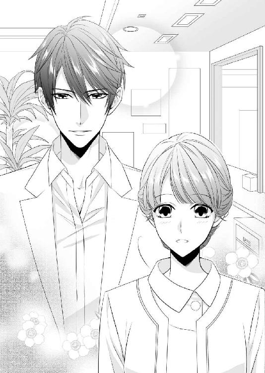
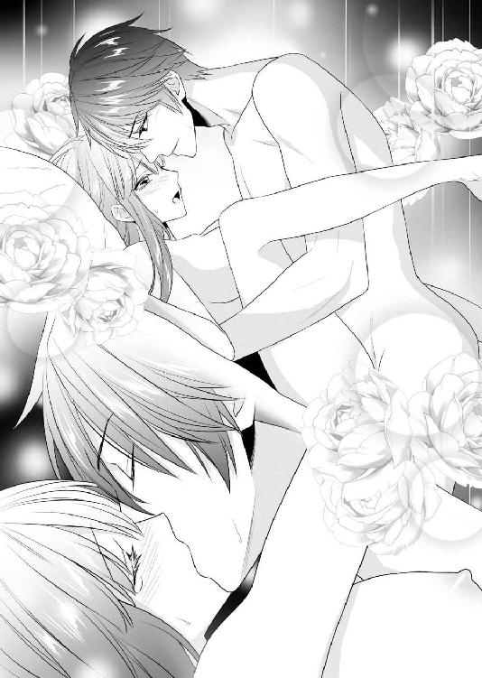
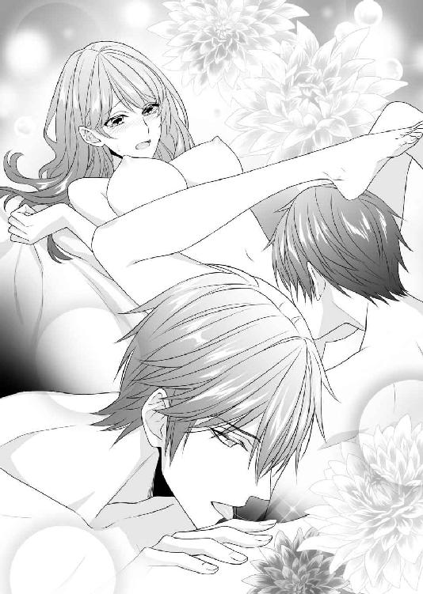
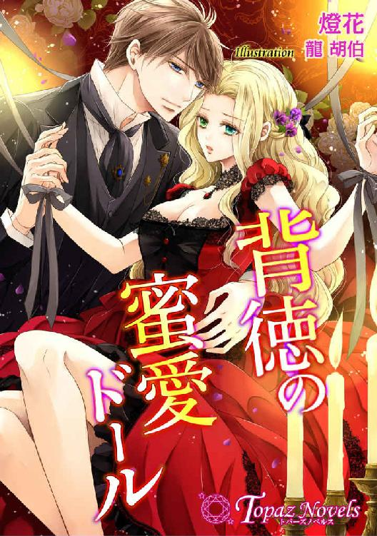

| 白衣の貴公子に淫桜が華開く【書下ろしイラスト3枚入り】 (トパーズノベルス) | |
| 春原いずみ | |
| アイデジタルパブリッシング (2017) | |
トパーズノベルス
白衣の貴公子に淫桜が華開く
著作 春原いずみ
Illustration 蔦森えん
この物語はフィクションであり、実在の人物・団体・事件とは一切関係ありません。
白衣の貴公子に淫桜が華開く
ＡＣＴ ０
彼の指が乱暴にブラウスのボタンを外していく。
〝もっと......ゆっくりしてほしいのに......〟
白いブラウスを剥ぎ取るように投げ捨てて、彼はスカートの中に手を入れてくる。
「いや......っ」
強引に太股の内側に手を入れられる。
「嫌じゃないだろ」
彼の指が、美桜の花片を下着の上から探る。薄い下着越しに、彼の指のぬるさを感じる。
〝こんなの......いや......〟
彼の部屋のベッドは、いつもきつめのコロンの香りがする。
〝でも......〟
初めてはホテルだった。ドライブの帰りに、車をホテルに入れられて、断れないままに初めてを奪われた。美桜が処女だったことに、彼は意外そうだった。
『何か、面倒くさいなぁ』
初めての体験に泣きそうになっている美桜に、彼は少し笑いながら言った。
『高校生くらいですませるだろ、普通』
それからは、いつもセックスする時は彼のマンションだった。彼のマンションに行くことイコールセックスだった。美桜はできたら、もっと......一緒に座って、ＤＶＤを見たり、話したりしたいのに、彼は性急だった。部屋に入るなり、美桜を抱きしめて、キスをする。それも初めから舌を差し入れてくる。美桜が嫌がっても、強引に舌を入れてきて、美桜が気を失いそうになるまで、キスを貪る。
「嫌じゃ......ないだろ」
彼の手が美桜の花片を下着の上からきつく押さえてくる。
「ほら......じわって濡れてきてる」
「やめて......」
いつもそうだ。彼は美桜に下着を着けさせたまま、花片を強引に嬲る。花片から蜜があふれ、下着がびっしょり濡れるまで、許してくれない。
「やめてじゃないだろ。いい......くせに」
「あ......あ......っ」
下着の縁から指を入れられる。
「や......いや......っ」
ブラのフロントホックが弾けるように外れた。ピンク色の乳首とぴんと張りつめた乳房がこぼれる。
「美桜の乳首......もう固くなってる」
「あ......いや......っ」
彼が乳首を口に含む。軽く歯を立てながら、きつく吸われて、声が出てしまう。
「いやぁ......っ」
「全然嫌がってないじゃん......」
しつこい指が下着の中に入って、蠢いている。しっとりと濡れそぼった花片の中にぐいと指が食い込んでくる。
「すげ......もうびしょびしょになってる」
「やめて......っ」
彼は、美桜の身体の変化を一つ一つ口にする。
「白い肌がもうピンク色になってる......美桜のバスト、もっと柔らかいといいのにな......ぴんぴんに固くて......」
「い、痛......っ」
ブラを外し、むき出しになった乳房をぐいぐいときつく揉まれ、くりくりと固くなった乳首をいじられる。
「あ......ああ......ん......っ」
嫌なのに......こんなの嫌なのに、どうして、濡れてしまうんだろう。身体が熱くなるんだろう。
『そんなの仕方ないよ』
親友の花織が肩をすくめて言ったことを思い出す。
『女の身体はそういう風にできてんだもの。防御本能って言うんだってさ。乱暴にされると、無理矢理にでも濡れて、身体を守るんだって』
彼が美桜のびっしょり濡れた下着を脱がせた。自分はジーンズの前をくつろげただけなのに、美桜だけは裸にする。美桜の白い裸身を満足そうに眺めてから、おもむろに服を脱ぐのだ。
「あ......っ」
彼がベッドからブランケットを払い落とした。シーツだけになったベッドに美桜を押さえつける。
「逃げたり......しないから......」
「嘘ばっかり。美桜は嘘つきだからな」
彼が楽しそうに言う。
「俺とやるのが大好きなくせに、嫌がって見せて。入れられるのが大好きなくせに、なかなか入れさせないんだもんな」
「やめて......っ」
いつもはこんなこと言わないのに、セックスの時になると、彼は人が変わったかのように、美桜を言葉と身体で嬲る。
「あ......あ......あ......っ」
彼が楽しむように、嫌がる美桜の太股を大きく広げた。白くふっくらと丸いお尻をぐっと持ち上げる。
「嫌......や......っ」
「もっと......足開けよ......ほら......入れてやるから......」
「い、嫌......っ」
彼が舌なめずりをしながら、美桜の柔らかく濡れた花片を指で開く。
「あ......ああ......っ！」
彼が押し入ってくる。美桜の苦痛を楽しむように、強引に押し入れてくる。
「優しく......して......お願い......ああ......っ！」
ぐっと奥まで入れられて、声があふれる。
「あ......ああ......ん......っ！」
白く豊かな乳房を揉みしだきながら、彼が腰を蠢かす。熱いものに貫かれて、仰け反ってしまう。少しも快感なんてない。ただ痛くて......怖くて。美桜が泣くのを、彼は快感で泣いているのだと勘違いしている。のたうつ白い裸身を押さえつけて、自分勝手に腰を打ち付ける。
「い、いい......すげ......いいよ......美桜......」
「あ......あ......あ......」
早く終わってほしい。早く......。
「美桜......すげぇ......きつ......」
強引なセックスを繰り返すうちに、美桜は覚えてしまった。ぎゅっと身体の奥に力を込めると、彼は早く終わってくれる。でも、あまりに早く終わらせてしまうと二度、三度と彼は挑んでくる。
「あ......い......いい......っ」
彼がぐいぐいと腰を押しつけてくる。
「あ......いや......っ」
花片が熱くなる。こんなに嫌なのに。嫌で仕方がないのに。
「いやぁ......っ！」
こんなの......愛じゃない。美桜の頬に涙が流れた。
ＡＣＴ １
どうして、今日は雨なんだろう。今日に限って、どうして雨なんだろう。
都倉美桜は、雨に濡れてしまったパンプスを恨めしげに見下ろしていた。
「まだあんまり履いてないのに......」
なんの飾りもない黒いパンプスは、美桜が初めて買った大人の靴だ。今までは、可愛くてヒールのあまりない靴ばかり買っていた。ハイヒールは歩きにくいし、黒いだけのパンプスに似合うような服も持っていない。しかし、就職活動ともなると、そんなことは言っていられない。友達と一緒に量販店に行って、無難な黒のスーツと白いブラウス、黒のバッグのセットを買った。去年の秋のことだ。それを今日、久しぶりの面接に着てきたのだが、着慣れないタイトスカートのスーツは足さばきが悪い上に、履き慣れないパンプスに靴擦れもできたようで、踵の辺りがひりひりと痛み始めていた。足下もどこかよろよろと心許ない。
〝颯爽と歩きたいのに......〟
美桜は医療系事務の専門学校に通っている。二年制の学校をもうじき卒業して、就職することになっている。本当なら、今頃はとっくに就職活動を終えて、もうのんびりしている時期なのだが、美桜は一度決まった職場から内定取り消しを通告されるという、不運に見舞われていた。
美桜は去年の秋に、私立の病院に就職が決まっていたのだが、今年になって、その病院の規模縮小が突然決まり、事務系職員の新採用全員が内定を取り消されたのだ。もう就職まで一ヵ月を切ったところでの採用取り消しである。学校側もずいぶん交渉してくれたが、もうそんなことをしている場合ではなかった。一刻も早く、新しい就職先を決めて、春からの新生活への足がかりを掴まなければならない。
〝そうじゃないと......〟
美桜は、親と二年間の約束で上京していた。実家の親は厳しく、自宅から通えないところに進学するのであれば、二年間しか猶予は与えられないと言われてしまった。せめて、公立の大学に合格できれば、四年間は許してもらえそうだったが、入試には失敗してしまい、公立系の短大にも進めなかった。どうにか潜り込めたのが、今の専門学校だった。
〝実家には帰りたくない......〟
就職さえできれば、実家に帰らなくてすむ。美桜は、高校教師の両親と、両親お気に入りの出来のいい兄に囲まれた家庭にうんざりしていた。二つ年上の兄は、両親と同じ教員になり、実家から通える高校に赴任することが決まっている。そんな中に、二年間の東京生活で何も得るものがないまま、戻る気にはなれなかった。だから、就職を決める時も、実家に戻ってこいと言う親の言葉には耳を貸さず、東京で就職先を探した。
「何とか......頑張らなきゃ」
家族には、内定が取り消しになったことは言っていない。そんなことを言ったら、帰ってこいと言われるに決まっている。それだけは、なんとしても避けたかった。
「えっと......」
そんな美桜がようやく見つけた就職先が、これから面接に向かうところだった。
肩にかけたバッグから、学校の教務でもらった求人票のコピーを出して、確認する。
〝『高垣メンタルクリニック』......〟
それは突然出された求人だった。何気なく見たクラスメイトたちがざわつくほどの好条件で、すでに就職を決めている子たちが「乗り換えようかしら......」と口々に言っていたほどだった。給与もよかったし、完全週休二日で、個人クリニックのため、残業もほとんどない。その上、場所もおしゃれな街のど真ん中で、近くに素敵なお店がたくさんある。
〝こんないい条件の職場、もうないもん......っ〟
バッグにコピーをしまい、気合いを入れ直して、駅の階段を降りようとした時だった。
「......っ」
履き慣れないパンプスの底が、階段の角で滑ってしまった。
「危な......っ」
慌てて、手すりを掴もうとしたが、大きめのバッグが邪魔をして、手も滑ってしまう。
〝うそ......っ〟
運悪く、向かいのホームに電車が入ったところで、階段の上の方から乗降客がたくさん降りてきてしまった。
「きゃ......っ！」
人混みに押されて、美桜は階段を踏み外す。身体がスローモーションで前に泳ぎ、斜めに転落していく。
〝痛い......っ！ 痛い......っ！〟
映画か何かで見たことがあるように、ぐるぐると横向きに階段を転げ落ちた。どさりと身体が投げ出されたと同時に、誰かに足首を踏まれてしまう。
「痛い......っ！」
悲鳴を上げると、わっとまわりの人々が飛び退くのがわかった。
「痛い......」
右の足首がずきずきと痛む。あちこちすりむいたのか、手首も膝もひりひりする。髪もスーツもぐちゃぐちゃで、バッグはどこに飛んだのかわからない。とりあえず、起き上がらなくちゃと身体を起こしてみたが、あちこちが痛くて、なかなか起き上がれない。
〝恥ずかしい......〟
とりあえず、スカートの裾を押さえる。頬が熱い。きっと、顔は真っ赤だ。こんなにたくさんの人が使う駅の階段から、思い切り転げ落ちてしまった。恥ずかしいけれど、身体を起こせない。足はずきずき痛むし、身体中もだんだん痛くなってくる。
〝誰も......助けてくれない......〟
すごい勢いで女の子が階段から転落したのに、誰も手を差し出してくれない。ただ、くすくすと笑いながら、美桜をよけて、通り過ぎていくだけだ。
〝どうしよう......〟
どこか、骨でも折れてしまったのだろうか。全然身体に力が入らない。頭を打ったのだろうか。起き上がれない。
「......大丈夫ですか」
どうしていいのかわからなくて、美桜が泣き出しそうになった時、落ち着いた声がした。
「え......」
思わず視線を上げると、すっきりと澄んだ黒い瞳が美桜を見ていた。
「あ、は、はい......」
すっと自然に差し出された手を思わず握ってしまう。ほっそりとしたインテリジェンスの感じられる手だが、関節の部分が少しごつごつしていて、男性の手という感じがした。コートの袖口から覗く白いシャツのカフスがまぶしい。
「立てますか？」
柔らかい響きの声だった。すっと耳に馴染む優しい声だ。美桜はこくりと頷いた。意外なくらい強い力でぐっと引き上げられて、美桜は立ち上がろうとする。しかし。
「痛......っ」
右足に激痛を覚えて見下ろすと、足首の部分が腫れ上がり始めていた。それはびっくりするくらいの腫れ上がり方で、みるみるうちにぱんぱんになってしまう。
〝骨、折れちゃったとか......〟
「ここではなんですから......少しだけ歩けますか？」
「え、はい......」
男性は美桜のバッグを拾い上げ、手渡してくれる。ファスナーがしまっていたおかげで、中身が散乱せずにすんだのがせめてもの救いだ。
「だ、大丈夫ですか」
誰かが知らせたのか、駅員が飛んできた。
「救急車、呼びましょうか」
「とりあえず、どこかで休ませていただけませんか？」
男性が落ち着いた口調で言う。
「ここでは......救急車を待つにしても、落ち着きませんし」
「あ、はい」
駅員が頷いた。
「じゃあ、駅の事務室に。救急箱なんかもありますし」
「ありがとうございます」
美桜の肩をさりげなく支えて、彼が言った。
「......痛みますか？」
「......え、ええ......でも、少しなら歩けます」
黒のパンプスは傷だらけで台無しだ。バッグも傷が大きく入ってしまったし、スーツも濡れたコンクリートの上に座り込んでいたおかげで、スカートを中心にぐちゃぐちゃになってしまっている。
「嫌でなかったら、寄りかかってください」
さっとコートを脱いで、彼は美桜の肩にかけてくれた。ふわっと微かなトワレのような香りがする。きつすぎず、柔らかな大人っぽい香りだ。
〝いい香り......〟
今まで、男性のトワレの香りはきついものだと思っていた。ちょっときつすぎて、苦手だと思っていた。でも、この香りは違う。優しくて、ふっとそばに寄りたくなるような......包み込まれたいような、安らぐ香りだった。
「......あの、すみません......」
少しだけよりかかるつもりだったのに、彼はぐっと美桜の肩を抱き寄せるようにして、けがをした美桜の右足に負担がかからないようにしてくれる。エスコートし慣れた大人の男性らしい自然な仕草だった。

〝いくつぐらい......私よりずっと年上......？〟
身長は、百六十センチを少し超える美桜より、ずいぶんと高い。百八十センチ近くはありそうだ。美桜を軽々と支えて、歩いて行く。
「もう少しですから」
駅員が言い、少し小走りに先に行って、駅事務室のドアを開けてくれた。
「すみません、散らかってますけど」
ソファに乗っていた雑誌を慌てて下ろし、駅員は美桜の座る場所を作ってくれた。
「えっと、救急箱......」
駅員が救急箱を探している間に、美桜をここに連れてきてくれた男性がすっと足下に膝をついた。
「足、診せていただいていいですか？」
「え......え？」
「少し、医療の心得はありますので。もちろん、病院に行った方がいいと思いますが、応急手当てくらいならできますから」
「あ、はい......」
「あったあった」
駅員が救急箱を持ってきてくれた。男性が箱を開けて、中から湿布と包帯を取り出す。
「失礼します」
腫れ上がった美桜の右足を自分の腿の上に乗せるようにして、足首の部分を見る。
「......折れてはいないと思いますが、ひびくらいは入っているかもしれません。応急手当てだけしておきますから、きちんと病院に行って、診てもらってください」
「はい......」
腫れた足首に湿布を貼り、手際よく包帯を巻いていく。包帯を斜めにまわして、きっちりと足首を固定していく手際は見事だ。
〝お医者さま......なのかしら〟
「......これでよし。ただ、靴が履けないと思いますから、ご家族に迎えに来ていただいた方がいいですね」
「はい......」
しかし、東京に家族はいない。美桜は少し考えてから、友人に電話することにした。バッグから携帯を取り出そうとして、求人票がはらりと落ちた。
「あ......っ」
階段から転落したショックで、すっかり忘れていた。美桜は就職の面接に向かうところだったのだ。
〝どうしよう......っ〟
腕時計を見ると、面接の時間はもうすぐだ。思わず立ち上がろうとして、美桜は悲鳴を上げた。
「痛い......っ！」
「あ、お嬢さん......っ」
駅員が慌てて駆け寄ってくる。
「だ、大丈夫ですか？」
「どうしよう......」
こんなぼろぼろの状態では、とても面接になんて行けそうにない。でも、きっともうこんないい条件の求人なんてない。
〝どうすればいいの......〟
その時、携帯電話の着信音がした。
思わず、美桜は自分の携帯の入っているバッグを見てしまったが、すっと腰を上げたのは、美桜の足下に跪いていた男性だった。
「失礼」
彼はポケットに手を入れながら、事務室を出て行った。その背中を見送る余裕もないまま、美桜はぐるぐるする頭をもてあます。
〝どうすればいいの......どうすれば......〟
このまま、面接に行っていいのだろうか。こんな姿で。でも、足はずきずきと痛くて、とても歩けそうにない。涙がぽろぽろとこぼれ出す。
「どうしよう......っ」
ひくひくとしゃくり上げ始めた美桜に、駅員たちが戸惑っている。
「あの......やっぱり救急車呼びましょうか？ そんなに痛いなら......」
「そ、そんなに......い、痛くない......で、です......っ」
「でも......」
ここで泣かれても、駅員たちは困るだけだろうとわかっていたが、美桜にはどうすることもできなかった。何も考えられない。ただ、涙が出るだけだ。
その時、軽快な着信音がした。美桜は少し泣いてから、はっとその着信音が自分のものであることに気づいた。バッグに手を入れて、携帯を取り出す。
「は、はい......」
見慣れない番号からの着信だった。
「はい......都倉です......」
『突然申し訳ありません。高垣メンタルクリニックでございます』
電話の向こうは涼やかな女性の声だった。
『都倉美桜さんですね？』
「はい......」
『本日、採用面接の予定だったのですが、どうかなさいましたか？ 当院の場所がわからかったでしょうか？』
「い、いえ......っ」
美桜はこくりと涙を飲み込んだ。
「あの......駅まで来たんですけど、階段を踏み外してしまって......けがをして、今、駅の事務室で手当てしていただいて......」
『そうですか。それは大変でしたね』
電話の向こうは落ち着いていた。
『それなら、少し時間をおいてから、面接をいたしましょうか。一週間後でいかがでしょうか？』
「え......」
美桜はきょとんとして、しばらく黙ってしまった。涙はびっくりした拍子に止まっていた。
「あの......よろしいんですか？」
『はい？』
「あの......私の都合で、面接の日を変えていただくなんて......」
『こちらとしましては、希望してくださる方すべてと面接して、当院に必要な人材を選ばせていただきたいと思っております。都倉さんがご希望になるなら、面接日を変えて、いいコンディションで臨んでいただきたいと思います。一週間後の十四日、午後二時でよろしいでしょうか』
「は、はい......っ。あ、ありがとうございます」
美桜は思い切り頭を下げて、また足にずきりと痛みが走った。
「いたた......」
『大丈夫ですか？』
気遣ってくれる電話の相手に、美桜はまたくすんと泣きそうになる。弱ってしまった心には、優しさがいっそう染みる。
「だ、大丈夫です。あの......ありがとうございました」
『いいえ。お大事に。私は高垣メンタルクリニックの望月と申します。何かありましたら、私宛てによろしくお願いいたします』
「はい。ありがとうございました」
美桜は電話を切って、ほぅっと息を吐いた。ようやく少し安心したら、頭が回り始めた。携帯から親友である河合花織にメールを送る。
『Ｏ駅の事務室まで迎えに来てくれない？ 階段から落ちて、足にけがをして動けないの』
すぐに返信が来る。
『おっけー。十五分くらいで行けるよ』
「あの、友人が迎えに来てくれるので、少し待たせていただいていいでしょうか」
美桜が泣き止んだことにほっとして、駅員がお茶をいれてくれる。
「ええ、いいですとも」
ほっとしたら、またずきずきと足が痛み始めた。しかし、そっと動かしてみても、さほど痛みはひどくならない。
〝ちゃんと......固定されてる......〟
美桜を助けてくれた男性は、きちんと手当てをしてくれたらしい。
「そういえば......」
美桜は辺りを見回した。事務所の中は、駅員ばかりで、さっきの男性は見当たらない。
「あの......私をここに運んでくれた方は......」
近くを通った駅員をつかまえる。駅員はまわりを見回してから言った。
「さっき電話が来て、出て行かれて......そのままですね。もしかしたら、勤務先から電話でも来て、そのまま出勤されたのかもしれませんね」
「あの人の名前とか、わかりませんか？」
いろいろと混乱していて、ろくにお礼も言っていない。あの人がいなければ、美桜は今でも、雑踏の中に取り残されて、泣いていたかもしれないのだ。
「お礼......言いたくて」
「こちらでも、聞いていませんねぇ」
駅員が少し笑って言った。
「お嬢さんが遺失物なら、聞いたところなんですが」
駅員の冗談に、ようやく美桜は少し笑うことができた。
「まったくもう......」
少し乱暴に車を運転しながら、花織はちらっと美桜を見た。
「ドジなんだから」
「......ごめん」
美桜は助手席で小さくなりながら、答える。
「ごめん、花織......」
「ま、いいけどさ。美桜がドジなのは、今に始まったことじゃないし」
河合花織は、美桜の専門学校でのクラスメイトで、親友と言える友達だ。美桜は地方から上京し、花織は東京生まれの東京育ち。明るくて元気だが、そそっかしい美桜と、大人びて落ち着いた花織と、出身地も性格もまるで違うが、なぜか初めて会った時から馬が合い、この二年間、友人として過ごしてきた。
「でも、骨折してなくてよかったね」
「うん......」
美桜の右足首は、捻挫だけですんだ。しかし、少しの間は安静にした方がいいと病院で言われ、松葉杖を借りてくる羽目になってしまった。
「でも、面接寸前に階段から転げ落ちるなんて、美桜らしいというか何というか......」
「もう......言わないでよ」
美桜のＳＯＳに、花織はすぐに応じ、車で迎えに来てくれ、病院まで付き添ってくれた。その帰りである。
「でも、面接どうするの？ あの条件逃すの、もったいないよ」
「あ、それは大丈夫」
美桜はにこりと微笑んだ。
「何でかわからないんだけど、面接、延期してもらえたの」
「延期？ どうやって？」
花織が目を丸くする。
「就職面接なんて、場合によっては受験より厳しいじゃん。遅刻なんて、格好の不採用案件だと思うよ」
「うん、そう思う」
美桜は素直に頷く。
「あの条件じゃ、絶対に競争率高いと思うし」
「でしょ？ どんな交渉したのよ」
美桜の住むマンションは学校のすぐそばだ。建物の外見は新しくてきれいだが、中身はワンルームで狭いことこのうえない。親からの仕送りでは、これで精一杯なのだ。アルバイトもしているが、それなりに遊んだりもしたいので、住むところは仕方ないと思っている。就職したら、もう少しいいところに引っ越すつもりだ。
「花織、寄ってく？」
「うん。美桜のドジっ子ぶりも聞きたいし」
「ひどいなぁ」
バッグを花織に任せ、美桜は慣れない松葉杖で、よろよろとマンションに入った。車を駐めた花織がすぐに追いついてきて、部屋の鍵を開けてくれる。
「美桜、とりあえず、着替えたら？」
「あ、うん......」
片足でよろよろしながら、セーターとジョガーパンツに着替えた。
「あーあ......スーツぼろぼろ......」
スカートもジャケットもあちこち擦れたり、穴が空いたりしていて、もう着ることはできなそうだ。
「新しいの買わなきゃ......」
「来週の面接には、私の着て行ったら？ どうせ、サイズ一緒だし」
花織がのんびりと言った。
「私、もう着ないし」
「うわぁ、すっごい痛いこと言われてる」
よいしょと座り込んで、美桜はため息をついた。
「でも、何か、験が悪いような気がするなぁ」
「験が悪い？ 何、古臭いこと言ってんの」
「だって」
美桜は手を伸ばして、冷蔵庫からペットボトルのアイスティを二本出す。狭い部屋なので、小さなテーブルを前にして座り、手を伸ばすとたいていのものに手が届いてしまう。
「いきなり、階段から落ちたのよ？ 何か、面接延期してもらっても、受かりそうにない気がする」
「そんなのわかんないわよ」
花織が言った。
「災い転じて福となすって言ってさ、案外いけるかもよ？」
「古臭いのは花織じゃない。何それ......」
足を楽に伸ばして、美桜はため息をつく。
「それにしても......がっかりだよ。人って冷たいなぁって思った」
「どういうこと？」
「だってさ、私が階段転げ落ちて、動けなくても、みんなくすくす笑ってるだけで、誰も助けてくれないの」
アイスティを飲んで、美桜は言った。
「あの人がいてくれなかったら......私、きっと声上げて泣いてた気がする」
「あの人？」
花織が首を傾げた。
「どういうこと？」
美桜は階段を踏み外したことから、男性に助けられたこと、手当てをしてもらったこと、そして、その人がいつの間にか消えてしまったことまで話した。
「......結局、優しくしてくれたのは、その人だけ。スマホで写真撮ってる奴までいて、こんな足じゃなかったら、蹴っ飛ばしてやりたかった」
「へぇ......」
花織がアイスティを一口飲む。
「で？ どんな人だったの？ いくつくらい？」
「うーん......三十にはなっていなかったかなぁ。すごく......いい声だった」
「声？ 顔は？」
「よく覚えてない。顔なんて、よく見てなかったもん。ひたすら下見てた」
「何やってんのよ......」
花織が呆れたといった感じの声を出す。
「男に親切にされたら、まず顔チェックしなさいよ。常識よ、常識」
「常識......なの？」
「当たり前じゃない」
花織は肉食系とまではいかないが、合コンでの勝率は群を抜く。自分に好意を持っている相手を見抜くのがうまく、成功率が高いのである。それだけ、相手を観察する能力に長けているということになる。
「......顔はわかんないけど、背は高かった。百八十センチくらい。で......すごくいい匂いがした」
「あなた、犬なの？」
「ひどい」
美桜は笑い出す。
「でも、本当にすごくいい匂いだったの。私、この通り、ぼろぼろだったじゃない？ コートを肩にかけてくれたの」
「わぁお」
花織が目を大きく見開いた。
「すごい。王子様みたい」
「王子と言うには、少し年がいってるって気がするけど」
美桜は笑った。
「でも、すごくいい匂いがしたのは本当。私、香水とか苦手なんだけど、あの匂いはいいなぁって思った」
「美桜の彼氏、結構バシャバシャ系だもんね」
「バシャバシャ系？」
「香水バシャバシャ系。結構、香り強いよね。私は苦手」
花織の言葉に、美桜は苦笑してしまう。確かに、美桜の彼氏である松尾智人はおしゃれで、香水もしっかりつけている。美桜よりも気合いが入っていて、たまにくらっとするくらいだ。
「私も......あまり好きじゃないけど......」
でも、あまり強くは言えない。
〝だって......せっかくできた彼氏だし......〟
智人は、美桜の自慢の彼氏だ。背も高いし、ルックスもまずまずだ。花織が計画した合コンで知り合って、智人の方から明るく可愛らしい美桜を気に入った。美桜の方も、自信家で何かとリードしてくれる智人が好きだ。東京に来て二年、何度か合コンでメアドを交換し、一度か二度のデートはしたが、なかなか恋人はできなかった。優しい人は好きだが、機嫌をうかがってほしいわけじゃない。どちらかというと、ぐいぐい引っ張っていってほしい美桜は、少し強引とも言える智人のリードが気に入り、つきあいも三ヵ月ほどになっていた。そろそろ、ファースト・インプレッションから脱して、細かいところが気になり始める頃だ。
「でも、他にいいところいっぱいあるし」
「はいはい、恋は盲目ってねー。ねぇ美桜、どうして、彼氏呼ばなかったの？ 松尾さん、医学部生でしょ？ こういう時、当てになるんじゃない？」
智人は私立医大の四年生である。美桜より二つ年上だ。
「......でも、スーツ姿、あんまり見られたくなかったし......」
「何で？」
おやつないの？ と聞かれて、美桜は手を伸ばし、ポテトチップスの袋を引き寄せる。
「だって......智人さん、就活のスーツ姿、嫌いだって。十把一絡げでみんな同じ格好して、ダサいって......」
「おー、言う言う」
花織が笑い出す。
「さすが、就活に縁のない医学部さまだね。言うこと違うわ」
「花織」
「いや、嫌みでも何でもないよ。医学部、歯学部だけだよ、そんなこと言えるの。あとは嫌でも就活必要だし、面接には、絶対そういうの着なきゃいけないもん。お医者さまにしか、そんなこと言えないよ」
「うん......」
美桜が、智人とつき合うようになったのは、秋の就活が終わってからだった。だから、智人は美桜の黒スーツ姿を見たことがないのだ。
「でも、スーツ着たからって、美桜のこと、嫌になるわけでもないだろうに」
「ダサいところ、見られたくないの。当たり前じゃない......」
美桜はポテトチップスの袋を開く。
「階段転げ落ちて、ぼろぼろのところなんて、見られたくないに決まってるじゃない......」
智人は良くも悪くもスタイリッシュなことを自慢にしているタイプだ。彼女にもそれを要求する。落ち込んでいる時に優しくしてもらいたいと思う反面、「何だよ、格好悪いな」と冷たく言われたらどうしようという気持ちもある。智人はべたべたに甘いタイプではなく、どちらかというと、彼女もアクセサリーの一部と見るようなタイプだ。そんな智人に選ばれたことも、美桜はちょっと自慢だったのだから、やはり彼をがっかりさせたくはなかった。
「花織、智人さんには内緒よ、階段から落ちたの」
「慰めてもらえば？ 包帯とか替えてもらって」
「......智人さんがそういうタイプじゃないこと、花織、知ってるでしょ」
恨みがましく言う美桜に、花織はあははと笑った。
「わかったわかった。で？ 美桜、その王子様、名前も連絡先もわからないわけ？ お礼とかしなきゃいけないんじゃないの？」
「うん、そうなんだけど......」
美桜はペットボトルのアイスティを飲む。そろそろぬるくなってきている。
「でも、わかんないものは仕方ないし......」
「あっさりしてるわねぇ」
花織が仕方ないなぁ、とため息をつく。
「階段からパンツ丸出しで落っこちたドジっ子を助けてくれた奇特な男よ。何を置いても、連絡先は聞かなきゃっ！」
この根性があるから、花織は彼氏を切らしたことがない。長続きしないと言えばそれまでだが、彼氏がいない時期は絶対にないのだから、ある意味凄い。
「......もしも面接がうまくいったら、あの駅使うことになるから、また会えるかも......」
「なーに、夢見がちなこと言ってんのよ。そんなの天文学的確率よ」
花織はごろっとカーペットに仰向けになる。
「まーったく、美桜が智人さんゲットできたのが不思議よね。もしかして、無欲の勝利ってやつ？」
「......知らないわよ」
美桜は包帯でぐるぐる巻きになった右足を見つめてつぶやく。
「......知らない......もん」
あの軽やかな香りに、もう一度会えたらと、少しだけ思う。男の人から、あんなに爽やかで優しい香りがするなんて、思わなかった。ぐっと強く抱き寄せてくれた彼の腕の力。間違いなくあれは大人の男の力だった。強引ではなく、優しく頼れる大人の男の力だった。
ＡＣＴ ２
「失礼します」
美桜は緊張した面持ちで、アイボリーホワイトで統一された清潔なクリニックの受付に話しかけた。
「あの......今日二時から、面接をお願いしております都倉ですが」
「ああ、はい。都倉美桜さんですね」
受付に座っていた目のくりっとした美人が、にっこりと微笑んだ。
「お待ちしておりました。院長がお目にかかりますので、ご案内します」
『Ｍ・ＭＯＣＨＩＤＵＫＩ』と胸に刺繍の入ったワンピースの白衣に白いジャケットを着た美人が立ち上がる。
「新井さん、こちらお願いします」
「はい」
別の女性スタッフに受付を任せて、望月はカウンターを出て、美桜の前に立った。
「さ、こちらへ」
「はい......」
待合室のところにある、らせん階段を昇っていく。
「ここ......は......？」
高垣メンタルクリニックは駅から歩いて五分ほどのところにあった。駅近くの一等地なのに、二階建ての建物はゆったりとしていて、とても広い。その一階部分に受付と待合室、診療室があるようだった。
「二階には、院長室とスタッフの休憩室、ロッカーがあります。診療は基本的に一階でやっています」
望月がてきぱきとした口調で言う。
「院長は院長室でお待ちです」
「はい......っ」
美桜はようやく足を引きずらないで歩けるようになっていた。しかし、用心のために、今日はヒールの低い靴を履いている。
「院長」
望月がコンコンと重厚な感じのドアを叩く。
「都倉さんがお見えです」
「どうぞ」
中から響きのよい声がした。甘い感じの低音で、耳に心地よい声だ。
〝メンタルクリニックの先生っぽいかも......〟
望月がドアを開けると、中はたくさんのポトスやパキラ、テーブルヤシ、モンステラが置かれたちょっとしたジャングルだった。
「お待ちしていました。どうぞ、おかけになってください」
窓の近くにあるデスクから立ち上がったのは、すらっとした長身の男性だった。院長という肩書きからは信じられないくらい若い。三十代に入ったばかりくらいにしか見えない。色白で細面の整った顔立ちをしている。きちんと締めたセンスのよいタイに丈が短めの白衣がよく似合う。
「初めまして、院長の高垣です」
魅力的な声で言って、高垣は微笑んだ。美桜は少し頬を染めて、ぺこりと頭を下げた。
「都倉美桜です。このほどは面接日を調整していただいてありがとうございました。ご迷惑をおかけいたしました」
「どういたしまして。あなたは学校の成績も優秀なようだし、きちんと話をしてみたかったんですよ」
どうぞ、おかけくださいと勧められて、美桜はゆったりとしたソファに浅く座った。
「望月くん、コーヒーを」
「はい」
望月が出て行き、高垣は美桜の向かいに座った。手元に美桜の履歴書と学校からの推薦状が置いてある。
「けがをなさったということでしたが、大丈夫ですか？」
「は、はい。雨で滑ってしまって。申し訳ありませんでした」
「雨はあなたのせいではありませんからね。さてと......当院はメンタルクリニックであることはご存じですよね」
「はい」
高垣の口調はおっとりと柔らかく、聞いていると眠くなりそうなくらいだ。
〝いけない、いけない〟
「うちは大きなクリニックではありませんので、クラークとして入った方に、受付もやっていただくことになりますし、レセプト計算などの医療事務もやっていただきます。それはよろしいでしょうか」
「はい。私につとまるのであれば、やらせていただきたいと思います」
「都倉さんは医療秘書課ですよね」
「はい」
美桜は頷いた。美桜が通っている専門学校は、医療秘書と呼ばれる医師の診療補助やカルテの記載補助をする職種の養成学校だ。しかし、レセプトの計算も学んでいるし、人と接するのは好きなので、受付もやれといわれればやるつもりでいた。
「でも、秘書にこだわるつもりはありません。いろいろなことにチャレンジしていきたいと思っています」
「それはありがたいですね」
高垣がにっこりと笑った。もともと下がり気味の目が優しい。
「都倉さん、当院の待遇はご存じですね？」
「はい。求人票を拝見しましたので」
「わかりました」
高垣はゆっくりと足を組み替えた。
「では、都倉さん。特に待遇に不満がなければ、あなたを採用させていただきたいのですが」
「は......はい？」
美桜はきょとんとして、ハンサムな院長の顔を見つめてしまう。
「あ、あの......」
「何か、不満がありましたか？ できる範囲でなら、あなたの要求に応じたいと思いますが」
「あの」
美桜は少し迷ってから言った。
「私で......よろしいんでしょうか」
高垣がくすりと笑った。
「よろしくなかったら選びませんが？ 私は選ぶ側ですよ？」
「いえ、ですが......たったこれだけの面接で採用なんて......」
「正直な方ですね」
高垣は心地よさそうに笑っている。明るい爽やかな笑顔だ。
「実は、書類選考の段階である程度決めていたんです。あとはお目にかかってからの印象ですね。うちのスタッフは、ほとんどあなたの母校から来ているのですが、いいスタッフばかりなので、できたら、同じ学校の卒業生から選びたいと思っていました。そこにあなたが来てくださった。あなたの面接が延期になった時点で、実は学校の方に連絡を入れたんですが、先生からもあなたを是非にという強い推薦をいただきましたし、あなたもとても感じのいいお嬢さんだ。決めない理由はないでしょう？」
「あ、ありがとうございますっ」
担任が美桜の就職先を気にしていたのは知っていた。美桜は担任の勧めで、内定を取り消された病院に就職を決めたのだ。そんなこともあって、ここに推薦してくれたのだろう。たぶん、この時期になって、これ以上の就職先はもう出てこないだろう。
「それでは、決まりということで。さっきここに案内してきた望月に詳しいことは聞いてください。あなたの教育係も彼女が務めてくれます。あなたの先輩ですから、いろいろと相談にも乗ってくれるでしょう」
高垣は電話を取り、内線をかけた。
「望月くんはいる？ ああ、僕だ。都倉さんに決めたから、制服やロッカーなんかのこと、よろしく頼むよ」
〝本当に......ここに勤められるんだ......〟
一等地にゆったりと作られたおしゃれなクリニック。清楚で可愛い制服。ハンサムな院長。三月のこの時期に、こんなに素敵な就職先が見つかるなんて。
美桜は自分の幸運に、心から感謝した。
〝階段から落ちて、悪い運も全部一緒に落ちたのかな......〟
「あの、よろしくお願いいたします......っ！」
美桜は深々と頭を下げた。
いつもの待ち合わせ場所は、智人の大学の近くにあるカフェだ。昼間はカフェで、夜になるとバーになるシックな店は、智人のお気に入りだった。
クリーニングしたスーツにちょっと高めのお菓子をつけて花織に返してから、美桜は智人にメールで連絡したのだ。
『今日、会えない？』
返信はすぐに来た。
『いいよ。五時にいつものカフェで』
「お待たせ」
美桜が座ったテーブルには、すでに恋人である松尾智人がいた。いつも吸っている煙草はきつめのメンソール。美桜も、智人と同じアイスラテをオーダーする。
「俺も今来たところだよ。美桜、就職決まったんだって？」
「うん、やっと。三月ぎりぎりに滑り込み」
美桜は、今日改めて届いた採用通知を智人に見せた。
「へぇ......ちょっと見せて」
智人は手を出して、それを受け取った。
「高垣メンタルクリニック......？ 知らないな」
「Ｏ駅の近くにあるきれいなクリニックよ。できたのは三年前。ネットで見てみたけど、評判いいみたい。投薬よりカウンセリングを重視するクリニックで、ドクターが三人とカウンセラーが五人。お給料もいいし、完全週休二日で、待遇はばっちり」
「開業医なのか？」
「うん」
美桜は頷いた。
「でも、待遇は病院よりいいよ。制服もすごく可愛いし、院長先生はすっごいハンサム」
「何だよ、それ」
智人はぽいと採用通知を放り出した。
「美桜、おまえ、本当にどこでもよかったんだな。何で、開業医になんて行くんだよ。どっか、病院なかったのか？」
「え......」
美桜は運ばれてきたアイスラテにストローを差した。
「病院って......何で、開業医じゃだめなの？ 保険とかの待遇もちゃんとしてるよ。仕事だって、変わらないと思うし......」
「......おまえ、意識低いな」
智人が少し小馬鹿にしたような口調で言った。
〝智人さん......〟
「美桜、花織ちゃんみたいにさ、何で大学病院とか狙わなかったんだよ。おまえ、最初っから、でかいところ狙ってなかっただろ？ だから、採用取り消しとか食らうんだよ。俺の大学の付属病院だって、求人出てただろ？ 何で、応募しなかったんだよ。花織ちゃんみたいに」
「え......だって......大学の付属病院って、正社員じゃないでしょう？ 契約社員だったんだもの......」
大きな病院の事務スタッフは、たいてい派遣か契約社員だ。美桜は多少条件がよくても、契約社員や派遣扱いのところは選ばなかった。花織のように、実家をあてにできない以上、正社員として自活しなければならないからだ。
「身分より仕事の内容をとれよ。小っさい開業医より仕事が幅広いだろ？」
智人に言われて、美桜は少しうつむいた。
「......でも、高垣先生のところはいろいろとやらせてもらえるのよ。クラークだけじゃなくて、受付とかレセプト計算とか......」
「こき使われてるだけじゃないか」
あっさりと言い捨てられてしまった。
「まったく......美桜はそれだからだめなんだよ」
「智人さん......」
「東京ではさ、何しても食べていけるんだから、いい経験を積める仕事選ばなきゃ。ステップアップをちゃんと考えろよ」
美桜は少し唇を尖らせて、アイスラテを飲んだ。
「ステップアップって......私は仕事を変えるつもりはないよ。お勤めできたところでずっと働くつもり......」
「だから、それが意識低いって言うんだよ。美桜には向上心っていうものがないんだな」
呆れたように言われてしまった。
「開業医にずっといるつもりなのか？ 開業医なんて、先がないじゃないか。院長がこけたら、あっという間に閉院するんだぞ？ そうしたらどうするんだよ」
「......」
美桜は黙り込んでしまう。そんな美桜の頭を、智人がぽんと軽く叩いた。
「ま、だからほっとけないんだけどさ。だから、美桜は可愛いんだよ」
〝いつも......こうだもの......〟
智人は妙に上機嫌だ。
「美桜、それさっさと飲んじまえよ。飯食いに行こうぜ。一応、つまんない仕事でも就職は就職だからな、高めの食事おごってやるよ」
「あ、うん......」
智人はいつもこうだ。美桜を下に見るような物言いが多い。もちろん、怒るようなことはないし、声を荒げることもない。友達の彼氏の話を聞くと、結構怒鳴ったり、ひどい時には叩かれたりすることもある子もいたので、それに比べたら、智人は優しいと思う。割り勘なんて一度もないし、エスコートもちゃんとしてくれる。
〝でも......〟
アイスラテを飲み終わり、美桜は立ち上がった。
「何がいい？ 美桜」
「あ、うん......智人さんが食べたいものでいい」
「じゃあ、イタリアンでどうだ？ この近くに新しい店できたんだよ。ちょっと内装がいいから、行ってみないか」
「うん」
智人のいいところは、美桜をこうやって引っ張っていってくれるところだ。美桜はリードしてくれる人が好きだから、智人のこういうところは気に入っている。
〝いい......人よね〟
美桜が智人の言うことに従っていれば、二人はカップルでいられる。
〝これで......いいのよね〟
すっと差し出された智人の腕に掴まって、美桜は歩き出す。
「......イタリアン、食べたかったの」
にっこり微笑んで、美桜と智人はカフェを出た。
ＡＣＴ ３
少し迷ってから、美桜は長い髪を編み込みにして、ゆるやかなアップにした。ギブソンタックと呼ばれる少しクラシカルな髪型だ。
「おはようございます」
真新しいワンピースの白衣の胸には、『Ｍ・ＴＯＫＵＲＡ』の刺繍が入っている。アシンメトリーになった小さな襟が可愛い。皮の白いシューズもぴったりだ。ワンピースに羽織ったジャケットも洒落ていて可愛い。
〝やっぱり......可愛い〟
花織の制服は私服の上に長い白衣を着るものだという。
〝毎日着るんだもの、可愛い方がいいよね〟
「おはようございます。あ、その髪型可愛いわね」
声をかけてくれたのは、望月だった。
「八時十五分からミーティングなの。みんなに紹介するね」
「はい、よろしくお願いします」
緊張した面持ちで、美桜はロッカーを閉じて、望月の後について、らせん階段を降りた。スタッフのロッカールームは院長室と同じ二階にある。二階には、他にスタッフの休憩室やカウンセラーたちの個室、医師たちの個室がある。一階がアイボリーホワイトでまとめられているのに対して、二階は淡いグリーンで統一されている。
〝院長、グリーンが好きなのかしら......〟
院長室は観葉植物がいっぱいで、ほとんどジャングル状態だったが。
「おはようございます」
「おはようございます」
受付カウンターの中にスタッフが集まっていた。意外に人数が多くて、美桜はびっくりする。望月がくすっと笑った。
「カウンセラーの先生も一緒なの。カウンセラーの先生は常勤が三人と非常勤が交代で四人。常に五人がいることになっているの。事務スタッフは受付が二人とカウンセリング受付が一人、ドクタークラークが三人、他の事務が三人。都倉さんは新人さんだから、私についてもらって、一通りの仕事を覚えてもらってから、正式の配属を決めるわね。これは年単位でローテーションするから」
「はい、よろしくお願いいたします」
「じゃ、ミーティング始めまーす」
望月がパンッと軽く手を叩いた。
「新人を紹介します。今日からスタッフになった都倉美桜さんです。とりあえず、今日から一ヵ月はあちこち回って、仕事を覚えてもらいますので、みんなも優しく教えてあげてください」
美桜はぺこりと頭を下げた。
「都倉です。よろしくお願いいたします」
「よろしくお願いします」
スタッフたちが声を揃える。美桜と同じワンピースを着ているスタッフはみな美人揃いだ。つんとすました感じではなく、みな可愛らしいタイプである。
〝院長先生のタイプなのかしら......〟
カウンセラーは五人。女性が二人と男性が三人で、みな院長と同じく丈が短めの白衣を羽織っている。年齢はスタッフたちは二十代から三十代の初めくらい、カウンセラーはもう少し年齢が高い感じだ。
「なかなか覚えきれないと思うけど、一応みんな自己紹介お願いします」
「はぁい」
元気な感じの若いスタッフが手を上げた。
「じゃ、私から。酒井由香です」
「箕尾絵美です。よろしくね」
次々にスタッフが名乗っていく。美桜は一人一人にぺこりと頭を下げるのに忙しい。
「じゃ、次はカウンセラーの先生、お願いします」
最後に望月が名乗って、美桜は彼女が真結という名前だと知った。
〝あーん、覚えられないー〟
それでも、どうにか頭を整理しようとしたところに、今度はカウンセラーたちが自己紹介をする。四人が次々に名乗っていく。
「......じゃ、最後が僕ですか」
柔らかな声が耳に届いた。
〝え......？〟
「カウンセラーの西條です」
美桜はその声に記憶があった。優しく柔らかく響く声。そして、微かに漂う爽やかな香り。
確かに、その人は、雨の駅で美桜を助け起こしてくれた優しい人だった。
〝うそ......〟
顔を上げると、きちんと白衣を着た長身の男性カウンセラーが立っていた。冷たいくらいに整ったきれいな顔立ちをしている。漆黒の髪と瞳が印象的だ。ハーフではないかと思えるほど彫りが深い。
「西條......先生......」
「はい、じゃあ、都倉さんは私と一緒に受付に入ってもらいます。ミーティング終わりまーす」
「今日も一日、よろしくお願いいたします」
スタッフがぺこりと頭を下げて、ミーティングは終わった。
スタッフの休憩室は意外なほど広く、淡いグリーンの壁に白い椅子とテーブルで、とてもおしゃれできれいだった。さすがに社食はないが、すぐ隣がコンビニだし、休憩室内に飲み物の自動販売機とコーヒーマシンが完備されている。
「あ、都倉さんえらい。ちゃんとお弁当作ってきてる」
望月が美桜の隣に座った。
「私なんて、コンビニのサンドイッチよ」
「最初だけです」
美桜は笑って、お弁当の包みを開いた。可愛く盛りつけた小さめのお弁当だ。他のスタッフとお昼の足並みは合わせようと思って、今日はとりあえず作ってきた。他のスタッフを見ると、お弁当とコンビニなどの既製品が半々くらいだ。外に食べに行くスタッフはあまりいないようである。ワンピースの制服なので、着替えて外に行くのが面倒らしい。
「で？ どう？ 仕事の方は」
サンドイッチを開けながら、望月が言った。
「どんな感じ？」
「えーっと......まだよくわからないんですけど......」
美桜は少し笑った。
「でも、いろいろ覚えることがあって、楽しいです」
「仕事、楽しい？」
「はい」
「いいことだわ」
望月も微笑む。
「えーと......美桜ちゃんって呼んでいい？ 一応、私の方がお姉さんだから」
「はいっ」
望月は親しみやすい笑顔で言った。
「ここ、働きやすいところよ。先生もいい方ばっかりだし、スタッフもみんな若くて明るいし」
「そうそう」
向かいから言ったのは、胸に『Ｅ・ＭＩＮＯＯ』と刺繍されたスタッフである。
「まだ開院してから三年じゃない？ 古株とかいないから、ラクだよー」
「コーヒーくれる？」
入ってきたのは、女性カウンセラーだった。結城と名乗ったカウンセラーだ。
「カフェラテ飲める？」
「はい。ミルク足しときましたから」
「カウンセラーの先生も見えるんですか？」
美桜の問いに、結城が振り返った。
「そうよ。私たちの個室にはコーヒーマシンないからね。ここのコーヒーもらうわけ」
穏やかで優しい声だ。カウンセラーや精神神経科医には、こうした天性のものも必要なのかもしれない。
「えっと、都倉さんだっけ？ いやぁ、ここのスタッフはみんな可愛いけど、あなたも可愛いわねぇ。高垣先生の趣味なのかしら」
「かもです」
望月がサンドイッチをかじりつつ言った。
「高垣先生って、スタッフ決めるのものすごく早いじゃないですか。面接って何なのって言うくらい早くて、私も一言二言で終わっちゃったんですけど、美桜ちゃんは中でも一番の早さだったんですよ」
「え、そうなんですか？」
確かに早いとは思ったが。
「かもねぇ。カウンセラーにはルックス求められなくてよかったわ」
結城が笑った。でも、彼女もなかなかの美人である。
〝何か、どこ見てもキラキラしてる感じ......〟
こうして、美桜の社会人生活は始まったのである。
「あ、雨......」
入社から一週間ほど経ち、美桜は少しずつ仕事にも慣れ始めていた。最初の印象通り、同僚たちは皆優しく、ドクターたちも親しみやすい。
「折りたたみの傘......」
スタッフ用の通用口で、バッグの中を探っていると、横をすっと通り過ぎていく人影があった。ふわっと香る微かなコロンの香り。
「あ、お、お疲れ様ですっ」
「お疲れ様」
柔らかく響く声。きれいに整った横顔。美桜は慌てて、声をかけた。
「あ、あの......っ、西條先生......っ」
通り過ぎていこうとしたカウンセラーが振り返る。冷たいほどに整った顔立ちは、やはりカウンセラーの西條隆之のものだった。
「あの......っ、私のこと......覚えていらっしゃいますか......？」
入社の日に、彼を見て、美桜は凍り付いてしまった。顔はちゃんと覚えていなかったけれど、彼の柔らかく響く声と微かに香るコロンの香りは、あの駅で助けてくれた人のものだった。
「君は......都倉さんでしたよね」
入社してから、西條とはミーティング以外で顔を合わせることはなかった。休憩室に顔を見せるカウンセラーもいたが、彼は男性ということもあるのか、休憩室に来ることはなかった。彼はカウンセリング室か個室にいることがほとんどで、受付にいる美桜と顔を合わせることはほとんどなかったのだ。
「覚えている......というのは？」
声は柔らかいが、知的でクリアな話し方だ。美桜は思い切ったように言った。
「あの......雨の日に、駅の階段から落ちた私を助けてくださいました......よね？」
少し間を置いて、彼がゆったりと頷いた。
「ああ......あの時のお嬢さんでしたか」
「はい......っ。じゃあ、やっぱり......」
西條は微かに頷いた。
「お気になさらず。大きなけがをなさらなくて、何よりです」
「あ......ありがとうございました。先生が助けてくださらなかったら、クリニックに入社することもできませんでした」
「そんなことはないと思いますよ」
手にしていた傘をさし、西條は穏やかな声で言う。
「あなたに会ったら、高垣先生は必ずあなたを採用していたでしょう。ここに入れたのは、あなた自身の努力があったからです。僕は関係ありませんよ」
「でも......っ」
「雨に当たらないうちにお帰りなさい。お疲れ様」
西條は軽く会釈すると、すっと通り過ぎてしまった。あっという間に、駅に向かう雑踏の中に後ろ姿が消えていく。
「美桜ちゃん、お疲れ。まだいたの？」
その後ろ姿を呆然と見送っていると、通用口を出てきた望月が声をかけてきた。
「どしたの？」
「あ、はい......」
「何か、魂抜けてるよ？」
目の前でぱっぱっと手を振って、望月は言った。
「美桜ちゃん、ご飯でも食べて帰らない？ 一人暮らしだよね」
「......いいんですか？」
「私も一人暮らしだから。新入社員歓迎でご馳走するね。そんなに豪華なディナーは期待しないでほしいけど」
望月が明るく笑った。
「さ、行こっ！」
望月が連れて行ってくれたのは、意外な店だった。
「アメリカン・ダイナー......？」
壁いっぱいに、五十年代、六十年代のポスターが貼られた店。テーブルには赤いチェックのクロス。カウンターにはソーダファウンテンという、オールディーズ感いっぱいの店だ。
「要するに、ハンバーガーの専門店よ」
向かいに座った望月が言った。
「ファースト・フードと一緒にしないでね。びっくりするよ」
望月の言葉通り、ハンバーガー・セットとしてオーダーしたものは、ものすごいボリュームだった。高さ十センチはありそうなハンバーガーにどっさりのフライドポテト、やたら大きいカップにたっぷりの氷とコーラ。
「何か......すごい......」
「彼氏の前じゃ、絶対に食べられない代物だよね」
望月があははと笑う。
「これ一緒に食べると、一気に友達気分だよ」
ふわふわ系の可愛らしい望月だが、中身はさっぱりした姉御肌の女性のようだった。
「......おいしいっ」
正直、ハンバーガーかと思っていたが、かりっと焼けていて、中がふわふわのパンに挟まれた分厚いパテはジューシーでスパイスが効いていておいしい。ピクルスも大きめで、食感がしっかりしている。
「ハンバーガーって......おいしいんですね......」
「でしょ」
望月がにこっとした。
「ここねー、ストレスたまると来るの。大口開けて、これにかぶりつくとみんな忘れられて、いい気分になれちゃう」
「ですねー」
「美桜ちゃん、そろそろ少し疲れてきたでしょ？ 今日はちょっと忙しかったし」
望月にいたわられて、美桜は首を横に振った。
「そんなことないです。私の方こそ、望月さんにご迷惑かけて......」
「あー、真結って呼んで。望月って早口言葉みたいでしょ」
「じゃあ......真結さんで......いいですか？」
「おっけい」
美桜のまわりには、こういうタイプが多いようだ。親友の花織も姉御肌で頼りがいがある。美桜はどちらかというとそそっかしく、明るくて憎めず、放っておけないタイプだ。
「美桜ちゃん、さっき、もしかして、西條先生と話してた？」
ポテトをつまみながら、望月が言った。
「先生、素敵でしょ」
「あ、ええ......カウンセラーなんですよね」
「そう。前にも言ったけど、うちのトップ・カウンセラー。イメージ療法の専門家で、患者さんが一番多いの。イメージ療法は、認知行動療法なんかと比べて、効果が出るのに時間がかかるけど、患者さんがゆったりと話したいことを話せるっていうんで、うちでは人気が高いの。西條先生、とにかく話を聞くのが上手いから」
美桜は小さく頷いた。
「すごく......穏やかな話し方をされますよね。何か......すごくほっとする感じで」
彼の声を聞いていると、慌てなくていいのだと思える。焦らずに、ゆっくり考えればいいのだと思える。あの時もそうだった。大事な面接を前にして、どうすればいいのかわからなくなってパニックになった美桜を、彼は一瞬にして落ち着かせてくれた。大丈夫だと。この人がいれば大丈夫なのだと思わせてくれた。
「真結さん、私......就職する前に、西條先生にお目にかかっているんです」
美桜はコーラを一口飲んで言った。
「え？ ほんと？ カウンセリング受けたとか？」
「いえ、違います。私、最初に面接に来るはずだった日に、駅の階段から落ちて、延期してもらったでしょう？」
「あ、うん......」
あの時、電話をくれたのが望月だった。
「院長から、美桜ちゃんが来ないから、連絡してくれって言われたのよね。まだ早いのにって思ったけど......でも、ビンゴだった訳よね。さすが、院長だわ......」
望月がうんうんと自分で頷いている。
「院長って、何か底が知れないタイプなのよね。にっこり穏やかだけど、何考えてるのかよくわからないタイプ。あのルックスとあの一等地で開業できる甲斐性があるのに、独身なのよ」
「そうなんですか......」
「ものすごいお嬢様の婚約者がいるとか、実はバツイチだとか、噂だけはいろいろあるけど、本人が口を割らないから、全然わからないの。ただ、独身だっていうのは確か」
リズムのいいオールディーズが流れている。音の大きさが絶妙で、明るく気持ちがいいのに、決してうるさくない。店は適度に混んでいるが、隣のテーブルの声も気にならない。
「で？ 美桜ちゃんのドジっ子と西條先生がどういう関係があるの？」
「もう......ひどいなぁ、真結さん」
あのぼろぼろの状態で面接に来なくてよかったと心から思う。きっと、万が一受かったにしても、ずっと笑われるネタになっていたに違いない。
「あの......私、足を滑らせて、駅の階段から落ちちゃったんですけど、その時、助けてくれたのが西條先生なんです」
「え......そうだったの？」
「はい。階段から落ちて、みんな笑っているばかりで、全然助けてくれなかったのに、足を捻って動けなかった私を、西條先生が駅の事務室まで連れて行って、手当てしてくださったんです」
あの時の頼りがいのある力強さ、優しく響く声。何もかもが忘れられない。
「それで、さっきちょうど帰りに通用口で一緒になったので、お礼を申し上げたんですけど......」
望月が頬杖をついて、美桜の方を見た。
「わりと素っ気なかったでしょ」
「え、ええ......」
美桜は頷いた。
「穏やかだし......拒絶する感じはないんですけど......」
「さりげなく、ドアをそっと閉める感じ」
望月の言葉に、美桜ははいと返事をする。
「その通りです。すうっと......通り過ぎるような感じで」
望月は追加オーダーしたシーザーサラダを取り分けた。美桜に半分を差し出す。
「あ、ありがとうございます」
「西條先生......そういう感じなのよねぇ」
望月は自分の分のサラダのレタスをフォークでつつく。
「スタッフにもね、優しいし穏やかなんだけど、すっと一歩引いちゃう感じ」
「そうそう、そういう感じです」
望月はなかなか表現力が豊かだ。
「あれが大人の男の人の対応なのかなぁとも思うんですけど......」
「でも、可愛い美桜ちゃんが相手なのに、素っ気なさ過ぎると......」
「そ、そんなことないです」
一応否定はするが、正直、それは思っていた。自分が特に可愛いとは思っていないが、男性にあれほど素っ気なくされたこともなかった。高校時代も上京してからも、男性に親切にされることは多かった。そして、美桜にお礼を言われて、素っ気なくするものもいなかった。何度か、つき合ってくれと言われたこともある。
「でも......ちょっとは思ったかな......」
「正直正直」
望月が笑った。
「でもね、美桜ちゃんだから素っ気ないとかそういうことないから安心して。西條先生、誰に対してもそうなの。カウンセラーだからかもしれないけど」
コーラのグラスに、低い位置に下がった照明が反射している。少し厚めのグラスがきらきらと輝いて、とてもきれいだ。
「西條先生、開院時からの常勤だから、三年のおつきあいだけど、プライベートのお話はほとんど聞いたことがないわね。院長とは昔からの知り合いで、開院する時に引っ張ったってことは聞いてるけど、これも院長からの情報だし」
ビール飲まない？ と誘われて、美桜は少し迷ってから頷いた。住んでいるマンションまでは乗り換えもないし、一杯や二杯のビールで酔っ払うほど酒に弱くもない。それよりも、もっと望月の話を聞きたかった。
「院長っておいくつなんですか？ ずいぶんお若いみたいですけど......」
「院長はいくつだろ......三十代だってことは確かよ。半ばくらいじゃないかな。西條先生は三十歳くらいかな。院卒でアメリカに一年留学して、大きな病院のカウンセラーを二年くらいやってたって聞いたから」
ビールが運ばれてきた。乾杯して一口飲む。軽い感じのビールだ。
「よし、可愛い美桜ちゃんにいろいろと教えてあげる。美桜ちゃん、私の後輩なんだよ。私もあの学校なの」
「じゃあ、先生が言っていた優秀な先輩って、真結さんのことだったんですね」
「えー、それほどじゃないよー」
乾杯を重ねて、二人はにっこりと笑い合った。
ＡＣＴ ４
桜はあっという間に散り、気がついたら、緑色に茂った葉が木陰を作る季節になっていた。
「お待たせ」
美桜はちょっと久しぶりに、智人の大学近くのカフェに来ていた。ずいぶんと日が長くなり、智人は店内ではなく、テラス席に座っていた。
「遅いじゃないか」
尖った声で言われて、美桜はきょとんと目を見開いた。
「え......でも、待ち合わせの時間通りだと思うけど......」
「いつも、十分は早く来いと言っているだろう。俺が時間作ってるのに、時間を無駄にさせるなよ」
「ご、ごめんなさい......」
智人は不機嫌さを隠さなかった。
「美桜が今日でないとだめだと言うから、時間を作ったのに、何遅れてきてるんだよ」
いつにない不機嫌さだった。美桜はびっくりして立ち尽くしている。智人は暴言を吐くようなタイプではなかった。どちらかというと、苦笑しながら、ちくりと言う方だ。それが今日は、まるで苦虫をかみつぶしたような顔をしている。美桜が初めて見る智人の顔だった。
「智人さん、どうしたの......？」
「別に。社会人の美桜さんの都合に合わせるのは、なかなか大変だってことさ」
智人が立ち上がった。
「お仕事が忙しくて、大変な美桜さん、さっさと飯食いに行こうぜ。俺も暇じゃないんだ」
ぐいと腕を引っ張られて、美桜はよろけそうになる。しかし、智人は先に立って、さっさと歩いて行ってしまう。
〝智人さん......〟
小走りに智人の後についていきながら、美桜は泣きそうになる。
〝久しぶりに会えたのに......〟
就職して、初めてのデートである。本当はもっと早めに会うつもりだったのだが、仕事が終わると慣れないことに疲れて、部屋に帰って寝たくなってしまうのだ。明日からは、月末のレセプト作業が始まる。今日会わなければ、来月の半ばくらいまでまた会えなくなってしまう。そう思って、今日は頑張ってきたのに。仕事は楽しいけれど、やっぱり疲れることも多くて、愚痴も聞いてほしかったのに。
〝何か......言える雰囲気じゃないよね......〟
三週間ぶりのデートは、ほとんど無言だった。智人は自分からほとんど話さなかった。いつもなら、うるさいと思うくらい自分から会話をリードするのに、今日はほとんど言葉を口にしない。
「......智人さん」
「何だい、お疲れの美桜さん」
皮肉っぽい智人の言い方に、美桜は悲しそうに目を潤ませた。
「そんな......言い方しないでよ」
「何が？ お疲れなのは本当だろ。恋人の前に来るのに、メイクの崩れも直してない」
「え......」
そう言えば、仕事が終わってから、さっとメイクは直したけれど、いつもなら智人に会う前に、もう一度メイクを確認するのに、今日はしていなかった。智人は、良くも悪くも繊細なタイプで、美桜のメイクや髪型、服装のちょっとした違いにすぐ気がつく。それがいつもは嬉しいのだが、今日はその指摘にちょっとした疲れを感じた。
〝そんなにひどくないはずだわ。仕事が終わってすぐに、ちゃんとメイクは直したのに......〟
「だいたい、ただの開業医の事務員が何でそんなに疲れるんだ？ 大したことはしてないだろう？ 美桜、おまえ、やっぱり元々の能力が低いんだよ。だから、たかが事務員程度の仕事で、恋人とデートもできないくらい疲れるんだ」
「そんな......」
「まぁ......おまえ、花織ちゃんみたいに大きな病院に勤めなくて正解だったかもな。おまえ、勤まらなかったよ。だいたい、おまえ、花織ちゃんに面倒見てもらってばっかりだったろ。少しはしっかりしろよな」
美桜は泣きそうになる。
〝どうして......どうして、こんなひどいこと言うの......〟
どちらかというと、今までも美桜を下に見るところのあった智人だったが、今日はいくら何でもひどすぎると思った。美桜は手にしていたフォークとナイフを置いた。
「......智人さん、私に会いたくなかったの？」
「何？」
「会いたくなかったなら、そう言って。私は......会いたかったのに......」
美桜はこの恋人のことが好きだった。自分勝手なところもあるし、上から目線なところもあったが、何より美桜を気に入っていて、女の子として大事にしてくれるところが好きだった。しかし、今の智人はいつもと違う。妙にイライラして、とげとげしい。
〝どうしてなの......〟
「会いたかったよ、俺だってさ。だから、ちゃんと時間も作っただろ。臨床実習で忙しいのに」
智人が眉を上げる。
「もう食わないなら、帰るぞ。俺のマンションに来いよ」
「え......」
美桜は唇を震わせて、智人を見た。智人がにやりと笑う。
「......来いよ。抱いてやるから」
美桜は立ち上がった。
〝ひどい......〟
「面倒くさい奴だな。抱いてもらいたいならそう言えよ。ずっとやってなかったもんな。やりたくなったんだろ」
「ひどい......っ」
美桜はバッグを探った。財布を取り出し、一万円札を引っ張り出して、テーブルに置く。
「......帰る」
「おい、美桜......っ」
智人の目がきっとつり上がった。
「おまえ、何だよ、これ......」
「私の分の食事代。......今日はおごってなんてほしくない」
美桜はぱっと席を蹴った。
「おい、美桜......っ！」
智人が追いかけてくる。美桜は店の中を走り抜けて、エントランスに向かった。ドアに手をかける手前で、智人に腕をつかまれた。
「放して......っ！」
「......ふざけるな......っ！」
痣ができそうなくらい腕をきつくつかまれ、店の外に引きずり出された。
「痛い......っ！」
「生意気な口きくんじゃねぇよっ！ 美桜は美桜らしく、俺の言うこと聞いてりゃいいんだよっ！」
「やめて......っ！」
智人が手を振り上げる。
〝殴られる......っ〟
美桜は無意識のうちに、自分の顔をかばっていた。
「きゃあ......っ！」
そのまま突き飛ばされる。コンクリートで固めたファサードに投げ出された。
〝痛い......っ〟
横倒しにされて、右足に激痛を感じた。あの雨の日にけがをした足首だ。
「ひどい......」
「しばらく、頭冷やせ」
智人が冷たく言い捨てて、去って行く。その背中を、美桜は呆然と涙の溜まった目で見送った。
「美桜......」
自分の部屋の片隅で、美桜は泣きじゃくっていた。
「......一応、手当てしたけど」
花織がそっと囁く。
「折れてはいないみたいだけど......明日、病院に行こう」
美桜はひくひくと泣くばかりだ。
レストランの前に置き去りにされて、美桜は花織に電話をして、迎えに来てもらった。その電話でも、美桜は泣くばかりで、花織に事情を説明することもできなかった。ただ、場所だけを告げ、迎えに来てくれと言うのが精一杯だった。
「美桜......松尾さんだね......？」
美桜の髪を撫でながら、花織が優しく言った。
「松尾さんに何かされたんでしょ......？」
美桜はこくりと頷いた。
「......腕つかまれて......怖くて......それで、突き飛ばされて......」
「そっか......怖かったね......」
花織がふうっとため息をついた。
「松尾さん、プライド高いからなぁ......意識高い系だし」
「......どういう......こと？」
花織は黙って立ち上がると、冷蔵庫からアイスティを取り出した。カップを二つ出して、アイスティを注ぎわけ、美桜の手に持たせる。その手も擦り傷だらけだ。
「飲みなよ。落ち着くから」
「うん......」
りんごの香りのする冷たい紅茶を一口飲んで、美桜は細いため息をついた。
「......花織......」
「美桜、松尾さんと......何があったの？」
花織がそっと言った。美桜は首をゆるゆると横に振る。
「......わかんないよ。今日会ったら......何か、最初から機嫌が悪くて......食事の間もずっと黙ったきりで......急に......」
まるで、セックスだけが目的のように扱われた。美桜は智人が初めての相手だった。今まで、何人かつき合った相手もいて、キスくらいはしていたが、セックスまで許したのは、智人が初めてだった。もっとも、それもドライブの帰りに、車の中で眠っていたらホテルに連れ込まれ、半ば無理矢理に奪われてしまったものだ。
「美桜」
花織が少し言いにくそうに言った。
「あのさ......ずっと思ってたんだけど......松尾さんと別れた方がいいんじゃない？」
「花織......」
「今日なんて、はっきり言ってデートＤＶだよ。てか、私ずっと思ってたんだよね。松尾さんのやってることって、モラルハラスメントじゃないかって。松尾さん、美桜のこと、いっつも馬鹿だからみたいなこと言ってるじゃん。あれさ、すごくムカつくんだよね」
花織はアイスティをがぶりと飲んだ。
「美桜が松尾さんのこと好きみたいだから黙ってたけど、あの人、ダメだよ。確かに医学部生の彼氏ってステイタスかもしれないけど、あの人は美桜のこと大事にしていない。一見、彼女だから守ってますみたいに見えるけど、本当は美桜を自分の好きにしたいだけだと思う」
確かに、医学部生の彼氏は自慢だった。今までできた彼氏の中では、一番ステイタス的に高い相手だと思う。でも。
「......私の気のせいかもしれないけど」
美桜はそっと足首をさすりながら言った。
「智人さん、私が就職したのが気に入らないんじゃないかと思う......」
「はぁ？」
「何か......私の就職が本決まりになった頃から......急に態度がおかしくなった気がするの......」
花織がはぁっとため息をついた。
「だめだわ、美桜。別れた方がいいよ。自分の彼女が順調に人生を歩み出したのが気に入らないなんて、小っさい男だよ。マジ別れた方がいい。もし、美桜が言い出せないなら、私が言ってあげてもいいよ？」
「......ううん」
美桜は小さく首を横に振った。
「......大丈夫。少し......考えたい」
「......わかった」
花織は仕方ないなぁという風に頷いた。
「今日、泊まらしてもらう。明日、私遅出だから、病院まで送ってあげるよ」
「うん......」
美桜はぽろりと涙をこぼす。
「花織......ありがとう」
『美桜、本当に大丈夫？』
今朝、勤務先の高垣メンタルクリニックまで送ってくれた花織に、美桜はこくりと頷いた。
花織は美桜の足のけがを心配してくれたが、どうにか歩くことはできたし、まだ就職したばかりだから、仕事を休みたくなかったのだ。
〝......私は大丈夫......〟
「おはよう」
よろよろと足を引きずってらせん階段を上がり、ロッカールームへ向かっていると、院長室から出てきた高垣と顔を合わせた。
「お、おはようございます」
軽く会釈して、ロッカーに向かおうとすると、後ろから声をかけられた。
「都倉さん、足、どうしたの？」
「は......はい？」
美桜は振り返った。
「足、引きずってるじゃない。けがしたの？」
優しく低い声で言われて、美桜はうつむいた。
〝やっぱり......わかっちゃうよね〟
この前痛めたのと同じ足だ。痛みはかなりひどい。スポーツ・テーピングのできる花織が手当てをしてくれたが、やはりはっきりと足を引きずってしまう。
「ちょっと......ドジやっちゃって」
美桜は少し引きつった笑いを見せた。高垣が心配そうに言う。
「近くに整形外科があるから、行ってくる？ この前も同じ足を痛めていたでしょう？ 靱帯を切っていたりすると大変だよ」
「あ、いえ......友達にテーピングしてもらいましたので、大丈夫です。明日の午後、お休みですから、明日お医者さまに行きます」
「そう。無理をしないように」
優しい声で言って、高垣は院長室に引っ込んだ。美桜はゆっくりと歩いて、ロッカールームに入った。
「美桜ちゃん」
受付カウンターの中にいた望月がそっと美桜の肘をつついた。
「悪いんだけど......西條先生に紅茶を持って行ってくれない？」
「はい」
望月は神経質で面倒な患者の応対をしながら、美桜に囁いた。
「今ちょうど空き時間だから。西條先生の紅茶、わかるわよね」
「はい」
美桜はそっと立ち上がった。医師とカウンセラーには、午前十時と午後三時近くの空き時間にお茶を運ぶことになっていた。手の空いたスタッフの仕事なのだが、今日はちょうど誰の手も空いていなかった。
「ごめんね、美桜ちゃん。足痛いのに」
こそこそと囁く望月に、美桜は微笑んで見せた。
「大丈夫です。痛みもだいぶ軽くなってきましたから」
痛みがなくなってきたのは本当だった。花織はスポーツ・トレーナーの勉強もしていて、テーピングの腕は確かだ。
〝ありがとう、花織〟
美桜はオフィスの隣にある小さな給湯室に入った。
「えっと......西條先生の紅茶は......」
ここには、医師やカウンセラーごとにお茶やコーヒーが持ち込まれている。紫色のアールグレイの缶を見つけて、美桜は香り高い紅茶をいれた。西條用のマグを棚から出し、紅茶を注いで、トレイに載せる。トレイを持ち上げて、歩き出そうとした時、ふいに足首がずきりと痛んだ。
「あ......っ」
思わず跪きそうになる。トレイを慌てて置いて、美桜は足首を押さえた。
「痛い......」
ふっと心の奥がどくりと音を立てた。身体がさぁっと冷たくなる。
「あ......」
記憶が一気に巻き戻される。意識して忘れようとしていたことがよみがえってくる。
「い、いや......」
腕をきつくつかまれた。おそるおそる見ると、うっすらと痣が残っている。
「いや......っ」
突き飛ばされた。堅いコンクリートに容赦なく叩きつけられた。あれは暴力だ。美桜は智人に暴力を振るわれた。
「......っ」
声にならない悲鳴が洩れる。
〝怖い怖い......っ〟
胸をぎゅっと冷たい手でつかまれた気がした。ふっと意識が遠のきそうになる。
〝助けて......っ〟
「......都倉さん」
柔らかい声がした。ふんわりと包み込むようにあたたかく滑らかな声だ。
「都倉さん......どうしました？」
美桜ははっと顔を上げた。すうっと血が下がるような気がして、倒れ込みそうになる。
「都倉さん」
あたたかい腕に肩を支えられた。彼はさっと棚からタオルを取ると床に敷き、美桜を座らせる。
「ゆっくり......息をして」
額にあたたかい指が触れる。
「大丈夫......ゆっくり......息をして」
柔らかく甘い声だった。そして、爽やかな香り。やっと息ができるようになる。
「そう......ゆっくり......」
髪を撫でられたような気がした。座り込んだ美桜の傍らに膝をつき、彼は優しい調子で続ける。
「......少し立てますか？」
美桜は小さく頷いた。暗い穴に引き込まれるようなめまいは少しずつおさまっていた。ちょっとふらつくが、立ち上がれそうだ。
「はい......」
美桜は力強い腕につかまって、立ち上がった。
「......僕のカウンセリング室はこの向かいです。歩いて......行けますか？」
美桜は頷く。まだ胸はざわついている。恐怖につかまれた心は冷たいままだ。でも、このあたたかな腕につかまっていれば、ちょっとだけ恐怖心は薄れる。
彼は美桜をそっとカウンセリング室にエスコートすると、ドアの表示を『入室中』に替えた。
カウンセリング室は柔らかなベージュで統一された部屋だった。西條は美桜をゆったりとしたリクライニングチェアに座らせると、ブラインドを斜めにして、部屋の明るさを調節した。
「......申し訳ありません」
ぽつりと謝った美桜に、西條はゆっくりと首を横に振った。
「いいえ。少し休んだ方がいい」
彼は一度部屋を出て行くと、すぐに戻ってきた。手には、美桜がいれたアールグレイのマグを持っていた。彼はそのマグを美桜に持たせた。
「少し飲んでください。落ち着きますよ」
美桜は少し微笑んだ。
「先生......友達と同じことをおっしゃる」
「そうですか？」
西條の声は、聞いているとほっと安らぐ調子を持っていた。
「僕は紅茶を飲むと、とても落ち着くんです。この......香りがとても好きなので」
「いい......香りです」
「ベルガモットです。爽やかで......心がクリアになる」
彼は美桜に微笑みかけた。
「少し休んで。足のけがは痛みますか？」
「いえ......大丈夫です」
「そう......」
彼はデスクの上に置いていたペットボトルから水を飲んだ。
「すみません、先生。私が......お茶をいただいてしまったから......」
「いいんですよ。また後でいれてください」
デスクに寄りかかって立ち、彼はゆったりと言った。美桜はそっと冷たい唇をカップに押し当てる。あたたかいお茶でからからに乾いてしまった唇を湿らせる。
「......西條先生」
「はい」
心が痛い。ちぎれてしまいそうだ。怖い。怖くて仕方がない。ここから出る勇気がない。
「......私、どうしたんでしょう......」
さっきまで何ともなかった。足は痛かったけど、心は痛くなかった。でも、急に呼吸が上手くできなくなって、倒れ込みそうになった。
「心が少し悲鳴を上げたんだと思います」
彼は柔らかい声で言った。
「だから、休んでいってください。もしも、僕がいない方がいいのであれば、席を外します」
「いいえ」
美桜は首を横に振った。心が揺れている。優しい声。整ったきれいな横顔。あたたかな腕。この人に頼っていいのだろうか。この人に心を預けていいのだろうか。
「先生......あの......患者さんはいらっしゃいますか？」
「いいえ」
西條はクリアな口調で言った。
「時間は空いています」
アールグレイの香りの湯気がふわふわと揺れる。美桜の吐息がこぼれる。細い細い吐息が。
「......昨日......つき合っている人に......暴力を振るわれました」
擦れた声で、美桜は言った。
「今まで......そんなことはなかったのに、急に......怒り出して、腕をつかまれて......突き飛ばされて......っ」
堰を切ったように、感情があふれ出す。
「怖かった......すごく......怖かった......っ」
涙がこぼれた。
「あんな......ひどいこと......っ」
智人が知らない人間に見えた。知らない人間に暴力を振るわれた気がした。
「あんなことをする......人だと思わなかったんです。百パーセント優しい人ではなかったけど、暴力なんて......っ」
泣き続ける美桜に、西條は落ち着いたトーンの声で囁くように言う。
「......怖かったね」
「怖かった......っ」
メイクなんて、もうぐちゃぐちゃだ。両手で顔を覆って、ひくひくとしゃくり上げる。
「すごく......怖かった......っ。すごく......っ」
もう言葉も出ない。ただ声を上げて泣いてしまう。胸のつかえが少しずつ少しずつ下りていく。なくなることはもちろんないが、それでも、少しだけ不安は小さくなってくれる。
「......すみません......泣いたり......して......」
「泣くのは悪いことではありませんよ」
西條が手を伸ばして、ティッシュを取ってくれる。
「泣くことで、心のつかえが取れることもあるのですから。急ぐことはありません。少しずつ心のつかえを吐き出して、楽になれればいいんです」
ティッシュで涙をぬぐい、美桜は自分の涙が止まり始めていることに気づいた。しゃくり上げるように震えていた身体も硬さが取れて、感情の波立ちがおさまってきた。
「もう少し、休んで行ってください」
西條は変わらぬ柔らかい声で言う。
「落ち着いてから、ゆっくりと戻ればいいですから」
「美桜ちゃん、遅かったね」
美桜が受付に戻ったのは、二十分ほど経ってからだった。ずいぶん長い間、席を外したと思っていたのだが、美桜が思っていたより、ずっと短い時間だった。しかし、スタッフが席を外す時間としては長い。
『望月さんに何か聞かれたら、僕の仕事を手伝っていたと言ってください』
美桜がやっと落ち着いて、カウンセリング室を出る時、そっと西條が言った。
『それから、少し時間を取って、カウンセリングを何度かした方がいいと思います。女性のカウンセラーがいいようだったら、僕が話をしますから』
『いえ......あの、お嫌でなかったら、このまま......西條先生にお願いしたいんですが』
美桜の申し出に、彼はひっそりと微笑んだ。
『わかりました』
「すみません、真結さん。西條先生のお仕事を少し手伝ってきました」
「あ、そうなの？ ご苦労様。じゃ、ちょっとここお願いしていい？ 私、ドクターたちにお茶いれてくるから」
「はい」
〝西條先生......〟
西條の柔らかな声とあたたかなアールグレイの香りに癒やされて、美桜は自分でもびっくりするくらい早く平静に戻れた。あんなに泣きじゃくっていたのが嘘のように、カウンセリング室を出る頃には、微笑みを浮かべられるほどになっていた。
〝プロって......あんな風なんだ......〟
美桜がいくら泣いても、叫んでも、彼はまったく動ずることはなかった。最後まで落ち着いて、美桜を慰めてくれた。まだ、昨日のことを思い出すと、少し怖いけれど、あの給湯室で突然襲われたような底なしの恐怖はなかった。
〝ありがとうございます......西條先生......〟
彼はまた話を聞いてくれると言ってくれた。
〝また......先生とお話しできる......〟
「こんにちは」
患者がやってきた。端末を確認すると、西條のカウンセリングを予約している患者だった。
〝先生に話を聞いてもらえるだけで、楽になるんですよね......〟
患者ににっこりと、美桜は笑いかける。
「カウンセリングのご予約でございますね。そちら、右手奥のカウンセリング受付の前でお待ちくださいませ」
ＡＣＴ ５
ブラインドの向こうは、すでに淡い闇の中にあった。
「六時を過ぎると、さすがに暗くなりますね」
ブラインドの羽を閉じて、西條が振り返った。カウンセリング室は五人のカウンセラーそれぞれに割り当てられていて、診療スペースの奥の方にある。
「......ここの窓の外には、初夏になると薔薇が咲くんですよ。窓を開けていると、薔薇の香りがします」
診療時間が終わってから、美桜は週に一回、西條のカウンセリングを受けていた。今日は三回目である。
「先生」
美桜はゆったりとリクライニングチェアに座り、天井を見上げていた。天井は壁と同じベージュで、パネル張りだった。無意識に、そのビスの数を数えながら、美桜は言った。
「香りって......いろいろ感じるところ、ありますよね......」
「そうですね。ふと感じた香りで、思い出がよみがえったりもしますね」
「私......智人さんの香り、嫌いだったんです」
美桜はぽつりと言った。
「ベッドにまで匂う濃いコロンの香りが......嫌いだった」
「都倉さん」
「この部屋のアールグレイの香りは好き......淡い薔薇の香りも好き......」
〝先生から香る......ほんの微かなコロンの香りも好き......〟
彼が香らせているコロンの香りは、本当に彼が傍に来なければわからない。彼と肌が触れるくらい傍に寄らなければわからない。爽やかなグリーンの香りだ。
「先生......私、智人さんと別れようと思います」
あれから、智人と連絡はとっていない。何度かメールは入ってきていたが、開かずに無視した。西條のカウンセリングで、デートＤＶの被害に遭った恐怖はずいぶん薄れていた。しかし、二度と智人と会うつもりはなかった。
「もう......つき合うつもりはありませんから」
「あなたがそう決めたなら、それでいいと思いますよ」
西條はマグカップから、アールグレイを一口飲んだ。
「ただ、一つアドバイスするなら」
「はい......」
「そうした話をするなら、決して一人では行かないことです。できたら、第三者の目のあるところで、友達かご家族についていってもらった方がいい。僕が付き添ってもいいんですが、家族でない男が顔を出すのはまずいでしょう。ご家族か女性のお友達についていってもらってください」
美桜は頷いた。
「わかりました......」
「では」
西條が柔和に目元を微笑ませた。
「駅まで一緒に行きましょう。そろそろ暗くなってきましたから」
「だ、大丈夫です......っ」
美桜は慌てて言った。リクライニングチェアから身体を起こし、フットスツールから足を下ろす。
「そんな、先生にご迷惑を......」
「でも、今日はお友達も迎えにいらっしゃらないんでしょう？」
カウンセリングを受ける日は帰りが遅い。今までは、心配した花織が迎えに来てくれていた。
「え、ええ......何か、歓迎会があるって......」
「いくら駅まで近くても、女性を一人で帰すことはできませんよ」
いつもなら、他のスタッフたちと一緒に駅まで行けるが、今日は一人だ。デートＤＶやモラルハラスメントの傾向のある恋人がいる以上、なるべく一人になる時間は少ない方がいい。自宅のマンションは幸い駅のすぐ近くだ。
「さぁ、駅まで送りますよ。着替えていらしてください」
「は、はい......っ」
美桜は頬がぽっと熱くなるのを感じていた。
〝西條先生と......一緒に歩ける......〟
あの爽やかなグリーンの香りを感じながら、ほんの少しの時間でも歩くことができる。
「す、すぐ、着替えてきますっ」
「慌てなくていいですよ。僕も帰り支度がありますから」
西條が整った顔に微かな笑みを浮かべた。それは、美桜がまだ見たことのなかった西條のどこか打ち解けたような、柔らかな表情だった。
スタッフ通用口を出ると、細かい霧雨が降っていた。傘を差そうとバッグの中の折りたたみ傘を探っていると、ふわっと濃紺の傘が差し掛けられた。
「あ......ありがとうございます......」
「駅まではすぐです。傘を出してしまったら畳まなければいけません。嫌でなかったら、このまま行きましょう」
西條は平坦な調子で言うと、ゆったりと歩き出した。決して歩みは速くないのだが、美桜よりも二十センチ近くも背が高いので、歩幅が違う。美桜は少し小走りになるような感じで歩いた。そんな美桜の様子に、彼はすぐに気づいたのか、さりげなく足取りをゆるめてくれる。
〝西條先生......〟
そっと視線を上げると、すっきりと整ったきれいな横顔。少し黒目がちの瞳がじっと前を見ている。
「はい......お言葉に甘えます」
彼は軽く頷くと、駅に向かう。
美桜が東京に来て、一番驚いたのはアーケードがほとんどないことだった。美桜の住んでいた街では、店が軒を並べているところでは、必ずアーケードがあり、店から店に行くのに、いちいち傘を差す必要はなかった。しかし、東京にはアーケードがほとんどなかった。だから、雨が降れば、どんな短い距離でも傘を差さなければならない。それがいつもは、うっとうしくて、面倒くさいのだが、今日は少し違っていた。
〝雨......もっと降ればいいのに〟
もっと雨が強くなれば、二人の間の距離が縮まるのに。肩が濡れるか濡れないかの霧雨では、あまり彼の方に身体を寄せてはいけないと思った。少し距離を保って、二人は歩く。
彼は何も言わなかった。美桜も何も言わない。何を言っていいのかわからなかった。二人は静かに歩いて行く。
〝駅に着いちゃう......〟
黙って歩いていても、なぜかその沈黙が重いとは思わなかった。しっとりと濡れた街は、シャワーで洗い流したようにきれいで、いつもより少し輝いて見えた。空は重い色のはずなのに、なぜか少しだけまぶしく輝いて見える。街も人も何もかも。
「あの......」
駅に繋がる地下道の入り口に着いてしまった。電車に乗るには、ここから入っていくのが一番早く、便利だ。
〝もっと......隣にいたい......けど〟
なぜだろう。話が弾んでいるわけでもないのに。ただ黙って歩いているだけなのに。ここにいたい。ずっと傍にいたい。彼の隣にいると、不思議とほっとする。智人といる時のような緊張する感じは全然ない。自分をよく見せようとか、可愛く見せようとか、そんな気持ちが全然起きない。ただ、彼の隣にいるだけで嬉しい。ここで、あたためられていたい。
「......ここで......」
「そうですね......」
彼が立ち止まる。傘を軽く傾けて、美桜が濡れずに地下道に入っていけるようにしてくれる。
「それではここで。気をつけて帰ってください」
「は、はい......ありがとうございました......」
なぜだか少し泣きたくなりながら、美桜は頭を下げた。
「あの......っ」
「はい？」
「あの......」
何を言っていいのかわからないまま、呼びかけてしまった。彼は、美桜が何か言うのを待っている。いつもと変わらない穏やかで静かな表情のまま。それは、患者を見るのと同じ顔。美桜は急に悲しくなってしまう。
〝そっか......私は患者なんだ......〟
彼のカウンセリングを受けている患者なんだ。だから、優しくしてくれるんだ......。
「あの......すみませんでした。送って......いただいて」
彼は別の路線で通っていたはずだ。ここからではなく、別の駅から乗車することになる。ここまでつき合ってくれたのだ。
「いいえ。お気になさらず」
彼はさらりと手を振ると、ゆっくりと去って行く。その白い手の残像を目の奥に焼き付けて、美桜はもう一度ぺこりと頭を下げて、地下道に駆け込んで行く。なぜだか、少し涙ぐみながら。
花織が美桜のマンションにやってきたのは、その日の深夜だった。美桜のマンションは、狭さのわりに家賃は高めだが、便利なところにある。学生時代から飲み会などがあると、花織はよく泊まりに来ていた。
「美桜ー、遅くにごめんねぇ」
インターホンに答えると、ほろ酔い加減の花織の声が聞こえた。
「いいわよ。入って」
ロックを解除すると、間もなく花織がやってきた。
「結構飲んでる？」
ほんのり目元を染めた花織に、美桜は笑いながら言った。
「ちょっぴりね。美桜、お水もらっていい？」
「どうぞ」
冷蔵庫からペットボトルを取り出して、美桜は花織に渡した。
「今日、迎えに行けなくてごめんね。大丈夫だった？」
「うん。駅までカウンセラーの先生が一緒に来てくださったから......」
「カウンセラー......階段落ちした美桜を助けてくれた人だっけ。その人が美桜の勤務先のカウンセラーだなんて、運命っぽくない？」
花織は小さなテーブルを挟んで、美桜の向かいに座った。花織は華やかな感じの美人だ。人によっては派手だと言われるが、中身はしっかりもので、姉御肌である。
「ねぇ、どんなタイプ？ まさか、松尾さんみたいなＤＶ野郎じゃないよね......」
「ち、違うわよ......っ」
美桜は慌てたように言った。
〝西條先生......〟
端正な美しい顔立ち、すらりとした細身の長身。涼しげな瞳と柔らかくまろやかな声。
「何か......大人な感じ......かな。カウンセラーだからだと思うけど、話してるとほっとする......」
「美桜、どのくらいまで話したの？ カウンセリングって、結構突っ込んだことまで話すんでしょ？」
「え......？」
「美桜さぁ......言ってたじゃん。松尾さんのエッチって......強引で優しくないって」
「あ、うん......。でも、私......智人さんが初めてだったから......よくわからない」
「あー」
花織が頭を抱えた。
「......そっか、比べようがないわけだ......」
ぐいと水を飲む。どこか男の子っぽい仕草だ。
「本当はそういうのまで、きっと話さなきゃならないんだろうけど......」
「い、嫌よ、そんなの......っ」
美桜が思わず大きな声を出した時だった。玄関のインターホンが鳴った。
「誰かしら......こんな時間に」
もう日付が変わっている。
「花織......」
「美桜、電気消して」
花織が低く言った。
「カーテン閉まってるよね。居留守使おう」
「え......いいのかな......」
またインターホンが鳴る。ここはマンションだが、女性向けの物件なので、セキュリティがわりときちんとしていて、室内からロックを解除しないとエントランスにも入れない。美桜は黙ったまま、インターホンを見た。
『美桜......俺』
美桜は悲鳴を上げそうになった。花織がそっと立ち上がり、玄関の戸締まりを確認する。
『開けてくれよ、美桜。何で、メール無視してんだよ』
「花織......」
「しっ！」
『何、拗ねてんだよ......。もう、いいだろ。入れてくれよ』
美桜は反射的にインターホンに飛びついていた。
「帰ってっ！」
「美桜っ」
「帰ってよっ！ もう、会いたくないっ！」
「美桜、落ち着いて」
『何、馬鹿なこと言ってんだよ』
智人の声が笑っていた。
『おまえが俺なしでいられるわけないだろ。俺、もう怒ってないからさ。入れてくれよ。ここ、結構寒いんだよ。泊めてくれよ。あっためて......』
「帰ってっ！」
美桜は叫んだ。ドアに飛びつこうとする美桜を花織が抱き留める。
「落ち着いて、美桜」
そして、花織はインターホンに答えた。
「松尾さん？ 花織です。美桜は取り乱してるから、帰ってください」
『花織......？ ああ、河合さんか。美桜、どうしたんだよ』
智人は笑いながら言う。
『美桜出してくれよ。俺と話せば、入れてくれるからさ』
「悪いけど、今日は帰ってください。でないと......警察を呼びます」
「花織......」
美桜は花織を見上げた。
「いいから、黙って」
花織は美桜を抱いたまま、毅然として言った。
「松尾さん、夜も遅いんです。女の子の部屋に押し入ろうとするなら、警察を呼びます」
『......わかったよ』
智人の声がした。
『美桜、誤解があるようだけど......』
「帰ってください」
花織が言い、ようやくインターホンは切れた。美桜は震えながら、花織の腕にすがっている。
「......どうしよう」
「大丈夫よ」
花織がカーテンの端をめくった。ふらふらと帰って行く智人の後ろ姿が見える。
「美桜、ついていってあげるから、ちゃんと......別れた方がいいよ」
「もう......会いたくない」
美桜は床に座り込んだ。
「また......暴力を振るわれたら......」
「だから、ついていってあげる。あの人......プライド高いから、危ないよ」
「......でも、会いたくない。このまま......フェードアウトできたら、一番いいんだけど......」
彼の顔はもう見たくない。腕をつかまれた時の恐怖がよみがえってくる。
「......難しいよ」
花織が冷静な口調で言った。
「あの人、美桜に暴力を振るったことを何とも思っていない。だから、ぬけぬけと会いに来られるんだよ」
「うん......」
美桜は涙をぬぐいながら、頷く。花織が続けた。
「少し落ち着いてからでいいから、ちゃんと話をした方がいい。あの人、美桜のことをすごく下に見ている。美桜が従うことを当たり前と思っているんだよ」
「それなら......話をしても変わらないんじゃない？」
美桜は言った。
「いくら話しても......わかってもらえないような気がする」
「それなら、なおさらだよ。美桜の口から、はっきり別れるって言った方がいい」
「でも、花織」
美桜は自分の両肩を抱くような格好をする。
「......怖いの。すごく......怖いの」
「美桜」
花織はぎゅっと美桜を抱きしめた。
「大丈夫。修羅場は私、慣れてるから」
「花織......」
花織がにっと笑う。
「心配しないで。それより、美桜、松尾さんと別れるよね？」
「え？」
花織が言う。
「なし崩しに、より戻したりしないよね？」
「そんな......こと」
あるはずがない。親にだって叩かれたことのない美桜だ。そんな美桜に、智人は暴力を振るった。信じられなかった。好きだと思っていたのに。小さな問題はあったけれど、好きだと思っていたのに。
「わかった」
花織が言った。
「......寝よ。明日からはできる限り、送り迎えしてあげる」
「でも、花織......」
花織だって、新入社員なのに。
「大丈夫。私は自宅から通ってるし、職場もうんと近いから」
親友はそう言って、笑ってくれる。
「さ、寝よ」
ＡＣＴ ６
美桜が入社して、一ヵ月が過ぎた。美桜は望月の指導から独り立ちし、医師付きのクラークとして配属された。
「おはようございます」
院長である高垣の診察室は、他の二人の医師たちのものより少し広い。来客を迎えることもあるため、小さなキッチンセットがついているのだ。
「はい、おはよう」
高垣がにこりと微笑んで、デスクについた。美桜は院長付のクラークになった。研修を終えた新人はだいたいこのポジションに着くのだという。
「都倉さん、仕事には慣れた？」
美桜も高垣の隣のデスクにつき、パソコンを立ち上げて、予約を確認した。クラークの仕事は予約通りに診療を進め、医師に代わってカルテの記載をするのが仕事だ。メンタルクリニックはカルテの記載が細かいため、医師に診療に集中してもらう意図で、高垣メンタルクリニックでは医師一人に一人のクラークがついている。
「はい、だいぶ慣れました」
先輩の望月は教え上手だった。他のスタッフも皆優しくて、美桜はこの仕事に満足している。これでプライベートのトラブルがなければ一番いいのだが。
「......西條のカウンセリングはどう？」
高垣がひっそりと聞く。美桜は少し表情を曇らせた。
「......申し訳ありません。ご迷惑をおかけして......」
カウンセリングは四回目になった。一度は落ち着いたものの、智人が家に訪ねてきてから、落ち込みがひどくなった。仕事には来ているものの、一人になるとどうにもならない不安が押し寄せてくる。西條に話を聞いてもらって、どうにか精神の平衡を保っている感じだ。
「迷惑だなんて、全然思わないけどね」
高垣はさらりと言った。落ち着いた滑らかな声だ。目尻の少し下がった顔立ちが優しい。
「通勤は大丈夫？ お友達に送ってもらっているようだけど、毎日ってわけにはいかないでしょう？」
「はい......」
花織はできる限り送り迎えをしてくれた。しかし、高垣の言う通り、毎日とはいかない。美桜が一人で通勤する日も増えていた。
「でも、ここのお勤めは出勤時間もラッシュとは、ずれていますし、帰りは駅までスタッフと一緒なので、大丈夫です」
美桜は元気を装う。
「さ、先生、診療時間です。患者さん、呼びますね」
「ああ、頼むよ」
高垣はおっとりと答えた。
「さ、始めようか」
美桜はそっとスタッフ通用口から顔を出した。
「美桜ちゃん、どうしたの？」
後ろから、望月が声をかけてくる。
「あ、あの......」
美桜は望月を振り返った。
「真結さん、外、誰かいませんか？」
「んー、ちょい待ちね」
望月が美桜に代わって、外を見てくれる。このスタッフ通用口は人通りの少ない路地に面している。
「大丈夫、誰もいないよ。どうしたの？ 美桜ちゃん」
「い、いえ......何か、たまに変な人がいて......」
美桜は望月の後について、通用口を出た。美桜と望月は、同じ路線の逆方向の電車に乗る。駅までは一緒だ。
「後つけられたりすることあるので......」
「あー、うち、結構それあるんだよね」
望月が眉をひそめた。
「ネットですっごい迷惑な紹介のされ方しちゃって」
「迷惑な紹介？」
路地の角を曲がって、二人は明るい道に出る。ここから駅に向かう地下道までは真っ直ぐだ。
「そ。美人揃いのメンタルクリニックとかね。おかげで、診療以外でも見物に来る馬鹿がいるのよ。美桜ちゃんも気をつけてね」
「あ、ええ......」
明るい道に出て歩き出す。しかし、美桜は落ち着かない。
智人が部屋に訪ねてきてから、美桜はクリニックの近くに、嫌な影を感じるようになっていた。はっきりと姿を見たわけではないが、どこかで見られているような、いつも見られているような嫌な感じ。花織が傍にいてくれる時は薄れるが、美桜が一人になると、その影は近づいてくる。
〝......まさか......〟
高垣は院長室から窓の下を見下ろしていた。
「......気に入らないね」
院長室のソファに座っている人物が小さく頷いた。
「もう待たなくていいんじゃないか？」
「いえ......できたら事を荒立てたくないので」
柔らかい声が答える。
「それは......彼女の望むところではないと思うので」
「しかし、ことが起こってからでは遅いと思うが」
「起こさないようにしますよ」
彼が立ち上がる。
「失礼します、院長」
「はい、お疲れ様」
高垣はひらりと手を振り、彼を見送った。
「じゃあね、美桜ちゃん」
「はい、真結さん。お疲れ様でした」
望月と別れ、美桜はホームへの階段を昇り始めた。
「花織、忙しいんだな......」
花織とはここ三日くらい会っていない。高垣メンタルクリニックでは、月初めの請求時期になっても、あまり勤務時間は変わらないが、花織の勤務する大学病院ではそういうわけにいかないらしく、メールも深夜にようやく返ってくるほどだ。
〝そんな時にトラブルに巻き込んじゃって......ごめんね〟
バッグを肩にかけ直し、階段を昇っている時だった。何かが近づいてくる。背筋が冷たくなる。
「きゃ......っ！」
後ろから、バッグの肩紐をぐいと引っ張られた。手すりにとっさにつかまって、身体を支える。
「危ないだろうっ」
追い抜いていったサラリーマンに怒鳴られて、美桜は身体をすくませる。
〝誰かが......引っ張った......？〟
ようやく凍り付いていた身体が動くようになって、辺りを見回すが、不審な人影は見えなかった。
「誰......」
ひやりとあの一瞬、背中が冷たくなった。
〝誰なの......〟
予想はついた。智人しかいない。でも、それを口にすることはできなかった。
〝もし......違ったら......〟
もしも、自分をつけ回しているのが、智人でなかったら。
〝智人さんの将来をつぶしてしまう......〟
美桜は智人の性格を知っているつもりだ。プライドの高い彼の性格上、美桜にそこまで固執するだろうか。美桜にふられたからといって、ストーカーのようなまねをするだろうか。
〝きっと......今頃は、もっと可愛い子とつき合ってるはず......〟
智人は決してもてない方ではない。美桜と歩いている時でも、通りがかりの女の子たちが振り向いていたり、智人と同じ医学部の女の子に声をかけられたりしていた。
〝私の......気のせいよね......〟
階段を昇りきり、ホームに立つ。
〝私、智人さんが怖いんだ......きっと......〟
我ながら情けないが、冷たいコンクリートに突き飛ばされたのが、よほどショックだったのだろう。男性に親切にされたり、大切にされたりするのは慣れていたが、乱暴に扱われたことなどなかった。それが恐怖心に繋がって、ありもしない妄想に繋がっているのだろう。
〝大丈夫......〟
電車が入ってきた。美桜は黄色い線のすぐ内側に立つ。
〝私は......大丈夫〟
電車が止まる。扉が開く。人の塊が吐き出される。
「大丈夫......」
バッグをしっかりと押さえて、美桜は電車に乗り込んだ。
そう。妄想と思いたい。
私は......いつ彼にマンションの場所を教えたのだろう。あのワンルームが恥ずかしくて、教えたことはなかったはずなのに。
五月の半ばになった。クリニックの外にある薔薇が少しずつ咲き始め、窓を開けるとふわふわと香りが流れ込んでくる。
「いい季節になったね」
高垣が言った。美桜は記載したカルテの確認をしている。
「そうですね......ずいぶん日が長くなりました」
午後五時を回っているが、外はまだ十分に明るい。
「今日は少し暑いくらいでしたね」
「都倉さん」
三時にいれてもらった紅茶がまだマグカップに残っていたのを飲み干して、高垣が言った。
「今日、何か予定は入ってる？」
「はい？」
今日は、花織が職場の飲み会とかで迎えに来ない。
「は、はい......特に予定はありませんが」
「だったら、食事に行かない？ 君の歓迎会もまだ私はしてあげていないし」
「はい......？」
美桜は少し迷う。高垣はとても魅力的だ。ハンサムだし、物腰は上品だし、仕事の腕はとても切れる。彼の前で、患者がほっと心をほどいて、安堵していくところを見るのが、美桜はとても好きだ。
「あの......いいんでしょうか......」
「何が？」
高垣がふっと笑った。
「食事の誘いなら、ご心配なく。新人さんとは必ず食事に行くことにしているんだよ。いろいろと話も聞きたいしね。下心はありませんよ」
「そ、そんな......っ」
心を少し見透かされたようで、美桜はどきどきする。
〝わ、私ったら......っ〟
女の子は不思議な存在だと、ふと思う。ストーキングに悩んでいても、心を惹かれる存在があっても、素敵な男性に誘われれば、心がふわふわしてしまう。
〝恥ずかしい......〟
うつむいて黙ってしまった美桜に、高垣が滑らかな声で優しく言う。
「私を少しでも魅力的な異性と思ってくださるなら、嬉しいですね。私はルックスでスタッフを選んでいるわけではありませんが、美しいお嬢さん揃いであることは、私の誇りでもありますよ」
くすりと笑って、高垣はパソコンの電源を落とす。
「それでは、着替えていらっしゃい。院長室で待っているから」
高垣が美桜を連れて行ってくれたのは、フレンチの名店だった。
「いつも、そんなに可愛らしいワンピースで通勤しているの？」
高垣が食後のコーヒーを飲みながら言った。
「うちのスタッフは美人揃いだけど、みなラフなファッションで通勤してくると思っていた」
「私も......ラフな時はあります」
美桜はおいしいケーキをフォークで切りながら答える。
「今日は......たまたまです。新しいワンピースを......買ったので」
花織に送ってもらう時はラフな姿をしているが、電車に乗る時はそれなりの格好をしている。今日は特に、買ったばかりのワンピースを着たかったので、シックな装いだ。淡いグリーンのワンピースに一目惚れして、少し高かったけれど思い切って買ってしまった。バッグも、いつもならショルダーの大きなバッグだが、少し小ぶりのハンドバッグだ。まるで、高垣に誘われることがわかっていたようだ。
「よく似合うよ。あなたは東京の出身ではないよね」
「はい。上京して、一人暮らしをしています」
「ご実家の方では、きっといいお嬢さんだったのだろうね。一人暮らしをしていても、きちんとした暮らしをしているのが見えるようだ」
「そんなこと......」
美桜はちょっとため息をついてしまう。ちゃんとしたお嬢さんだったら、ストーキングなんてされないと思う。今朝は花織が送ってくれたし、帰りは高垣と一緒だったので、何も感じていないけれど。
「時間は大丈夫？ 都倉さん」
デザートを終えて、高垣が言った。美桜は時計を確認して、頷く。
「終電までにはまだ時間がありますから」
「それはよかった」
高垣がおっとりと微笑む。
「今日は自宅まで送るよ。マンション？」
あれはマンションなんて言ってはいけないと思う。美桜は小さく頷いた。
「一応。ちっちゃいマンションですけど」
正直に言うと、高垣はふっと笑った。
「正直だね。女の子はお城に住んでいると言うものと思っていたけど」
「私はお姫様ではありませんから」
すらっと言ってしまってから、美桜ははっとした。思わず目を見開いて、高垣を見つめると、彼は優雅に微笑んでいる。
〝私、智人さんの前では......住んでいるところの話なんて、一度もしなかった......できなかった......〟
智人は裕福な医師の家庭で育った。東京に自宅があるのに、大学の近くに広いマンションを借りてもらって、暮らしている。美桜はほとんどデートのたびに、智人のマンションに行っていたが、智人は美桜のマンションに来たことがない。智人は来たがったが、美桜はいつも話をそらしていた。智人の豪華なマンションに比べて、その一部屋よりも狭い自分のマンションがひどく恥ずかしかったからだ。
「......魅力的な女性はね、どこに住んでいてもお姫様なんだよ」
高垣はすっと立ち上がった。
「夜景のきれいなバーがあります。一杯だけつき合って」
美桜の住むマンションは、外見だけはマンション風だ。エントランスもちゃんとしていて、インターホンもついている。
「きれいなところだね」
電車に一緒に乗って送ってくれた高垣が言った。
「女性専用かな？ セキュリティがしっかりしているようだけど」
「専用じゃありませんけど、住んでいるのはほぼ女性みたいです。私もセキュリティがちゃんとしているので、ここを選びました」
「それが一番だね。じゃあ、私はここで」
高垣が携帯を取りだした。ここからタクシーを呼んで帰るのだという。
「あの......ありがとうございました。院長のおうち、逆方向なのに」
「どういたしまして。レディを誘ったんだから、送るのは当たり前だよ。運転手付きの車でなくてごめんね」
さらりと言って、高垣が軽く手を振った。美桜はぺこりと頭を下げて、マンションに入る。
〝シンデレラの時間はおしまい......ね〟
セキュリティ・キーを叩いて、エントランスをくぐる。白い壁は現実で、今まで見ていた夢の世界が急に色褪せる。
〝ちゃんと......自分を磨かなくちゃ......ね〟
高垣のエスコートは完璧だった。美桜がメニュー選びに困っていると、食べられないものを確認して、さりげなく手伝ってくれた。ワイン選びもテイスティングも堂に入っている。美桜がシルバーの使い順がわからなくなって困っていると、やはりさりげなくフォローしてくれる。
〝智人さんだったら......〟
智人はいい家の息子らしく、高い店に行きたがった。食事代はいつも払ってくれるので、それで困ることはなかったが、いつも嫌だったのは、美桜がマナーを知らないことを智人があげつらうことだった。最終的には教えてくれるのだが、それも散々『美桜はものを知らないからな』と言ってからだった。高垣が、やはり高級そうなフレンチレストランにエスコートしてくれた時も、美桜はまたマナーを馬鹿にされるのかと、悲しい気持ちになった。しかし、高垣はさりげなくフォローして、美桜を楽にしてくれた。美桜は初めて、男性との食事を楽しむことができたのだ。
「もう......忘れよう」
智人とはもう一ヵ月も会っていない。メールもいつの間にか来なくなった。このまま、フェードアウトしていけばいい。きっと、彼はもう私のことを忘れている。
「ただいまっ」
誰もいない部屋に向かって、美桜は元気に言った。
高垣は携帯を取り出すと、まずタクシーを呼んだ。そして、煙草をくわえながら、もう一つの番号へとかける。
「ああ......私だ」
コール一回で相手は出た。待ちかねていたのだろうと思うと、少しおかしくなる。
「今、彼女を送ったよ。住んでいるところはちゃんとしているようだ。セキュリティも問題ない」
電話の向こうがほっとした声を出す。わかりやすい奴だ。手練れの精神神経科医からすれば。
「ああ......おまえの言う通りだったよ。うちのセキュリティも考えないといけないな、そろそろ」
高垣は電話を切った。ポケットに携帯をしまいながら、ちらりと視線を後ろに流す。
澱んだ影。暗いオーラを放つ人影。
「ふん......」
高垣は悠々と煙草を吸いながら、ゆったりと美桜のマンションの壁により掛かる。
「さぁて......これからどうなるのかな......」
小さな声でつぶやきながら。
ＡＣＴ ７
「今日は遅くなっちゃったね」
ロッカーで美桜が着替えていると、入ってきた望月が言った。
「美桜ちゃん、一緒に帰ろう。少し待ってて」
「はい、真結さん」
メンタルクリニックは残業が比較的少ない職場だ。急患が入りにくいからである。しかし、まったくないわけではない。今日も、パニック障害の発作を起こした患者が急患で入ってきて、高垣が診た。高垣付きの美桜と受付だった望月が残業になったのである。
「美桜ちゃん、院長とご飯行ったんだって？」
望月に言われて、美桜はこくりと頷いた。
「はい......びっくりしました」
「だよねー」
望月が笑っている。
「私も誘われた時びっくりしたもん。院長、私に気があるんじゃないかって思った」
美桜も笑い出してしまう。
「ですよね。院長、素敵だから、どきどきしました」
「遊んでるらしいよー」
望月がまとめていた髪をほどきながら言う。
「お金も地位もルックスも揃ってるからね、うちの院長。独身なのが不思議だもん」
「本当に独身なんですか？」
「だと思うよ。カウンセラーの結城先生って、院長とつきあい長いらしいけど、結婚してるって聞いたことないって」
「そうなんですか」
望月が着替え終わり、二人は揃って、職場を出た。
「美桜ちゃん、今日はお友達のお迎えはないの？」
「最近は。いくら友達でも申し訳なくて。花織......友達も私と同じ新卒ですし」
「お友達はどこに勤めているの？」
「Ｋ大学医学部付属病院です」
「うわぁ、一流どころだ。優秀なんだね」
「ええ。花織、成績はいつも一番でしたから」
駅に向かう地下道を歩き、改札を通る。
「じゃ、私こっちだから」
「はぁい。また明日お願いします」
「また明日ねー」
望月と手を振り合って、美桜はホームに上がる。
〝やだ......ラッシュにかかっちゃったかな......〟
いつもより二十分くらい遅いだけなのに、ホームには人がいっぱいだ。美桜はなるべく人の少ない乗り口を探してホームを歩く。
「えと......」
人の間をくぐって、ホームの真ん中に進みかけた時だった。
「きゃ......っ！」
ぐいと引っ張られた。人の間から出てきた手が美桜の服を掴んで、ぐいっと引っ張ったのだ。その勢いで、美桜は振り回されてしまう。
「あぶな......っ」
遠心力は馬鹿にならない。しかも、肩から掛けたバッグの分も上乗せされるので、それだけ大きく振られてしまう。
〝落ちる......っ！〟
少しヒールが高めの靴のせいか、足下が崩れてしまう。抵抗することもできないまま、身体は大きく投げ出されていく。
〝もうだめ......っ！〟
電車が入ってくるのが、スローモーションのように見える。身体が冷たくなる。
〝だめ......っ！〟
目をつぶった時、ふっと身体が引き戻されるのを感じた。遠心力と逆方向に力がかかり、強く引き戻される。その反動で、美桜は強く誰かにぶつかった。
「......」
声も出ない。電車が走り抜ける風圧を背中に感じる。ドアの開く音がする。
「こっちへ」
耳元で柔らかい声がした。ふわっとベルベットのように柔らかな声。
「......西條先生......」
身体を包む爽やかなコロンの香り。美桜は西條の胸に抱かれていた。初めて触れる彼の胸は、驚くほど広く、すっぽりと美桜を包み込んでくれた。
「嘘......」
夢ではないかと思った。死んでしまったと......もう自分はだめだと思ったのに、ここにいる。しかも、西條の胸に抱かれて。
〝こんな......夢......〟
西條は座り込みそうな美桜をそっとホームの端に連れて行ってくれた。人混みを避けて、そっとベンチに座らせてくれる。
「大丈夫ですか」
こんな時でも冷静で、静かな声。美桜は浅く息をしながら、やっと少しだけ顔を上げる。
「先生......先生なんですか......？」
もつれる舌で言った言葉を西條は聞き取ってくれた。軽く頷いて、美桜の髪を撫でてくれる。
「......間に合ってよかった」
「先生が......助けて......くださったんですか......？」
「美桜ちゃん......っ！」
階段を駆け上がってきた望月の声がした。
「大丈夫っ!?」
向かいのホームから、電車が滑り込む寸前にホーム下に転落しそうになった美桜が見えたのだろう。望月が駆けつけてきた。
「美桜ちゃん......西條先生......」
望月もびっくりした顔をしている。美桜は西條のジャケットに顔を埋めたままだった。望月の声は聞こえたが、今は見ることができない。現実に戻るのが怖かった。今、ホームから転落しかけたのだと確認するのが怖かった。
「西條先生、どうして......」
望月の問いかけに、西條はさらりと答えた。
「たまたまですよ。都倉さんを見かけたので、何となく見ていたら、ホームでよろめいて、転倒しそうになっていたんです」
〝嘘だわ......〟
美桜は明らかに誰かの手によって、ホームから突き落とされようとしていた。それを西條は助けてくれたのだ。しかし、美桜が動揺しないように、言葉を濁してくれている。
「でも先生、美桜ちゃん、誰かに引っ張られたみたいに見えたんですけど......」
望月の言葉に、西條は軽く首を横に振ったようだった。
「僕には見えませんでした。ただ、都倉さんが転びそうになったので、支えただけです」
美桜は震える指で、西條のジャケットを掴むだけだった。この指を放したら、また落ちてしまう。怖くて怖くて、手を放す気にはなれなかった。
〝怖い......怖い......っ〟
「望月さん、ちょうどよかった。都倉さんを送って......」
「いや......っ！」
美桜は西條のジャケットに顔を埋めたまま、叫ぶ。
「放さないで......っ！」
「美桜ちゃん......」
望月が戸惑ったように言う。
「......大丈夫？」
今も、服を掴まれた時の感触が残っている。それは、あのレストランのファサードに叩きつけられた時の感触とよく似たものだった。冷たく、邪悪なものに満ちた、あらがうことを許さない強い力。
「都倉さん」
西條が優しい手で、美桜の髪をそっと撫でてくれる。
「大丈夫......落ち着いて。ゆっくり......息をして」
それは、美桜が繰り返し聞いたカウンセラーの深い声。
「大丈夫......もう大丈夫ですから」
「怖い......っ」
美桜は幼い子供のように叫ぶ。
「怖い......怖いの......っ」
「望月さん」
西條が落ち着いた声で言った。
「美桜さんのお友達をご存じですか？」
「え、ええ......よく送り迎えしてくれる河合さんっていうお友達なら......」
「その方を呼んでください。都倉さんのご自宅の方で待っていてもらえるように」
西條の声に、ようやく美桜はバッグを探った。携帯を探し出して、震える手で望月に差し出す。
「......花織で登録してあるのが......友達です」
「わかったわ」
望月は頭の回転の速い女性だ。頷くと、すぐに花織に連絡をとってくれる。
「美桜ちゃん、河合さん、すぐに自宅の方に向かってくれるって」
「あ、ありがとうございます......」
少しだけ震えが止まってきた。きつく握りしめてしまっていた西條のジャケットからそっと指を外す。
「す、すみません......皺になってしまいました......」
「構いませんよ」
西條は優しく言い、そっと美桜の髪を引き寄せた。ふわっと彼のジャケットの内側から、爽やかな香りがする。
「......少し歩けますか？」
「は、はい......」
震える足を踏みしめて、美桜は立ち上がる。ふらっと傾いた身体を西條の肩が支えてくれる。隣に立つと、彼はやはり背が高い。すらっと細身に見えるが、意外に身体のフレームはしっかりしている。着痩せするタイプなのかもしれない。
「望月さん、都倉さんは僕が送りますので、あなたも気をつけて帰ってください。できたら、このことは......」
「他言無用ですね。わかっています」
望月が頷いてくれた。
「美桜ちゃん、お友達も待っていてくれるから......今日はゆっくり休んでね......」
「あ、ありがとうございます......真結さん」
西條にすがったまま、美桜はようやく頷き、望月に頭を下げた。
西條の車は国産のセダンだった。落ち着いたミッドナイトブルーが美しい。
「車......」
「え？」
美桜のつぶやきに、西條が答えた。
「車がどうかしましたか？」
「いえ......車で通勤していらっしゃるって、知らなかったので」
「普段は電車です。あそこは車より電車の方が便利ですからね」
しかし、西條のハンドルさばきは慣れていた。滑らかでエレガントな運転だ。花織も運転は上手いが、西條の腕はその上だと思った。加速も減速もスムーズで、ほとんどショックがない。微かなサスペンションの振動しか感じず、じっと座っていると眠くなりそうだ。
「......何もお聞きにならないんですね」
「僕はカウンセラーです。質問することだけが仕事ではありません」
「仕事......ですか」
「ああ、失礼」
西條が微かに笑った。彼が微笑むと、端麗な横顔がふわっと優しくなる。彼の瞳は不思議な色だ。わずかに紫がかって見えるような黒い瞳だ。光の入り方で黒い瞳が一瞬すみれ色っぽく見えるのだ。彼は笑う時、少し目を細めるような表情をする。それでとても優しい印象を与えるのだ。
「僕は......話すことがあまり上手くないんです。聞くことはできますが、話すのは少し苦手です」
「そんなこと......」
「人によって」
西條はゆっくりとハンドルを切りながら言った。
「カウンセリングのやり方はいろいろです。僕の場合、都倉さんはよくご存じでしょうが、クライアントにとにかく話してもらうことが第一なんです。僕はあまり口を挟まず、話の糸口だけを与えて、後はすべてを吐き出してもらう。話してもらうためのテクニックはありますが、僕自身が話すことは、正直苦手です」
確かに、西條のカウンセリングは、話すことがメインになる。彼が柔らかな声で導くままに、心の中を吐き出す。そんな感じだ。彼は、決して話を遮らないし、否定もしない。ただ、受け入れてくれる。それがカウンセリングの方法として、いいのか悪いのかは別にして、確かに楽になるものはあった。時に泣いてしまうこともあるけれど、彼は美桜の涙を見ても動じない。ただ静かに見守り、美桜の心が静まるのを待ってくれる。
「......もしかしたら......」
美桜はゆっくりと、少し震える声で言った。
「もしかしたらなんですけど......私、誰かにホームから突き落とされそうになったのかもしれません」
「......その可能性は否定できませんね」
西條は落ち着いたトーンで言う。
「残念ながら、僕は都倉さんの後ろの方にいたので、それが誰かまでは特定できませんでしたが、都倉さんの立っていた位置からして、事故で転落することは考えにくいと思います」
西條の言葉はとても知的だ。きちんと整理されていて、聞きやすい。
「......怖いんです」
美桜はぽつりと言った。
「駅のホームから突き落とされたら、どんなことになるか......それをわかった上で、私を突き落とそうとする人がいるとしたら......私はその人に、いったい何をしてしまったんでしょうか」
窓の外を見慣れた景色が流れていく。もうすぐ美桜のマンションに着く。
「私は......殺されるほどのことをしてしまったんでしょうか......」
「......人の考えは皆同じではありません」
西條が少し考えてから言った。
「一つの事象に対する考えは、皆同じではありません。それは見る角度が違うからでしょう。一つの出来事があって、都倉さんはこう思い、他の誰かは違う見方をする。その認識の違いだけです」
車はすうっと、美桜のマンションの前に止まった。近くの車から花織が飛び出してくる。
「美桜、いったいどうしたの......っ」
「ごめん、花織......」
花織の顔を見たら、また泣き出しそうになってしまった。西條も車を降りてきて、花織の前に立ってくれる。美桜は無意識のうちに、西條のジャケットの袖を掴んでいた。彼につかまっていなければ、また倒れそうで怖かったからだ。
「河合さんですね？」
西條が言った。
「僕は高垣メンタルクリニックのカウンセラーの西條です。今日の帰りの駅で、都倉さんが事故に巻き込まれそうになったので、お送りしてきました。まだ落ち着いていないので、少し一緒にいてあげていただけますか」
「は、はい......っ。美桜、大丈夫なの？ けがは？」
「......大丈夫。西條先生が......助けてくださったから」
西條はそっと美桜の手を取ると、軽くきゅっと握ってくれた。あたたかな体温が伝わって、美桜はほっとする。彼はもう一度、ゆっくりと美桜の髪を撫でた。優しく優雅な仕草に、美桜はほっと心が和んでいくのを感じる。今日の事件は......夢だったのかもしれない。ふうっと恐怖心が遠ざかり、今ここにある温もりが本当だと思える。一瞬のことで、何が何だかわからなかった転落未遂事件より、今こうして、西條の柔らかな声と香りと温もりに包まれて、今これこそがリアルなのだと感じられる。
「......早く休んだ方がいいでしょう」
西條の温もりが遠ざかっていく。彼はそっと美桜の手を自分のジャケットから外すと、少し困ったような笑みを浮かべた。涼しい一重の目が細められて、本当に優しく見える。
「......はい」
「美桜、中に入ろう」
花織が肩を抱いてくれて、美桜はそっと西條から身体を離した。ふっと遠ざかる香り。温もり。そして、彼の声。
「明日は無理をしなくていいですから、休んでください。高垣にも伝えておきますので」
「はい......」
花織に連れられて、マンションの中に入っていく美桜を、西條はその後ろ姿が消えるまで、見送ってくれたのだった。
事件の翌日、美桜は花織に送ってもらって出勤した。
「美桜ちゃん......」
ロッカールームに入ると、先に着替えていた望月がびっくりしたような顔をしている。
「今日、お休みじゃなかったの？」
他の耳をはばかって、ひそひそと囁く。美桜はこくりと頷いた。
「そのつもりだったんですけど......うちにいても、落ち着かないし......」
「そっか......」
「都倉さん、来てる？」
ロッカールームをノックする音が聞こえて、スタッフの中で一番の古株である坂西の声がした。
「はい」
慌てて答えると、坂西が続けた。
「院長がお呼び。院長室の方だって」
「はい......っ」
「失礼します。都倉です」
院長室のドアをノックすると、高垣の優雅な声が返ってきた。
「どうぞ、入って」
「失礼します」
中に入ると、そこにいたのはいつものようにデスクについた高垣と西條だった。
「西條先生......」
昨日のことを思い出して、美桜は自分の頬が熱くなるのを感じていた。昨日を思い返すと、西條は美桜を抱きしめ、何度も髪を撫でてくれた。美桜は彼の胸にすがり、ジャケットに顔を埋めて泣いてしまった。
〝どうしよう......恥ずかしい......〟
「都倉さん、昨日は危なかったみたいだね」
高垣が言った。
「西條先生から話は聞いたよ」
「高垣先生には知っておいてもらった方がいいと判断したんだ。勝手に話してしまって、申し訳ない」
西條に言われて、美桜は慌てて首を横に振る。
「いえ......」
「それでね」
高垣がたたみかけるように言う。
「君、しばらくの間でいいから、ここの隣にあるウィークリー・マンションに移りなさい。費用はこっちで持つから」
「先生......っ」
「何かあってからでは遅いからね。君、何か心当たりはある？」
高垣に尋ねられて、美桜は言葉に詰まった。
智人があんなことをするだろうか。あのプライドの高い智人が、何もかもを下に見ていた美桜をつけ回し、あまつさえ駅のホームから突き落とそうとするという、犯罪行為にまで手を染めるだろうか。未来のある医学生である智人が。
〝......あり得ない......そんなこと〟
美桜は首を横に振る。彼は一方的に美桜を虐げてきた男だ。そこまで美桜に執着するとは思えない。
〝私なんかのために、あの人が人生を踏み外すはずがない〟
「......いいえ。つき合っていた人とは......もう連絡もとっていませんし、会ってもいません」
これは本当だ。メールもないし、電話もない。彼は美桜から離れたのだ。
「了解」
高垣が肩をすくめた。
「しかし、まぁ、一ヵ月くらいでいいから、ちょっとお引っ越ししてみて。ついでに、どこかここの近くに部屋を探した方がいいね。職場と家は近い方がいろいろと楽だし」
「......はい」
美桜は素直に頷いた。
「それから」
高垣が続けて言った。
「都倉さん、配置換えするよ。君を今日から、カウンセリング受付に配置します。いいね？」
「え......」
カウンセリング受付は、カウンセリング室の前にある。診察をせずに、カウンセリングだけを受けにくる患者がいるためだ。
「でも......」
自分だけが特別扱いみたいで、気が引ける。しかし、高垣は安心させるように微笑んで言った。
「カウンセリング受付の箕尾さんは、もともと私のクラークでね。君と入れ替わる形で向こうに行ったんだけど、戻りたがっていると聞いてね。できるだけ、スタッフの意には添いたいと思うから、都倉さん、申し訳ないけど、箕尾さんと代わってもらえないかな」
「はい......そういうことでしたら......」
カウンセリング受付は一人だ。カウンセラーのスケジューリングも担当するので、カウンセラーとよく顔を合わせることになる。
〝西條先生と......一緒に働ける......〟
そんなことが、美桜は無性に嬉しかった。
「わかりました。やらせていただきます」
美桜がカウンセリング受付に配置換えになって一週間ほどした、夜のことである。
「まだいらしたんですか？」
美桜は一生懸命、表作成ソフトと戦っていた。カウンセラーたちのスケジュールを記してある一覧表だが、それが今日の午後に不具合を起こしたのだ。美桜はそのプログラムを納入した会社に電話しつつ、修復していたのだ。
「西條先生......」
顔を上げると、白衣を脱いで、ジャケットを手にした西條が立っていた。
「え......」
あわててパソコンの時計を確認する。すでに時刻は午後八時になるところだった。
「やだ......っ」
「都倉さんの作業が終わるまで、自分の仕事をしていたんですけど、思ったより時間がかかってしまって」
「わ、私こそ......っ」
この建物は、鍵をかけずにおくと、午後八時には自動的にセキュリティがかかるようになっている。美桜もそのことは入社時に説明を受けていたのだが、すっかり忘れていた。
「す、すみません......っ。先生、どうぞお帰りに......」
「女性を一人残して、帰れるはずがないでしょう」
西條が少し微笑んだ。滅多に見せない、冷静な彼の笑顔を見ると、美桜は訳もなくどきどきする。
「着替えてきてください。今日は車で来ているので、お送りします」
「でも......」
「たまにしか乗らない車なので、走らせてやらないとバッテリーが上がってしまうんです。嫌でなかったら、少しつきあってください」
西條が柔らかく言った。彼の言葉は、いつもとても優しい。棘など一つもなくて、いつもふんわりと美桜を包んでくれる。
〝私が......先生のクライアントだから、優しいんだ......〟
勘違いをしてはいけないと思う。彼は大人だから、腕利きのカウンセラーだから、美桜に優しい言葉をかけてくれるのだ。
「すぐ、着替えてきます」
それでも、小走りに走り出してしまう。彼が待っていてくれるのが、とても嬉しくて。
ロッカールームに入ると、美桜は無意識のうちに、メールを確認していた。
「あ、花織だ......」
親友の花織からメールが入っていた。少し長めのメッセージだ。
『松尾さんの噂聞いたよ。実習中に急に暴れ出したり、逆に居眠りばっかりしたりで、おかしいんだって。病院のドクターたちを怒らせて、やばいみたい。目とかいっちゃってるって噂。美桜、気をつけて』
「智人さんが......？」
あのスタイリストの智人が、精神のバランスを崩しているというのか。美桜は高垣メンタルクリニックに勤めてから、いろいろな患者やクライアントを見てきた。中には、花織のメールにあった智人のようなものもいた。原因は人それぞれだが、そこに恋愛関係が絡むことも少なくない。しかし、美桜は智人がそういうタイプには思えなかった。
〝智人さんは......私なんて、気にしない......はず〟
『大丈夫だよ。気をつける』
美桜は花織にメールを送って、携帯の画面を消した。
西條と美桜は、静かに、ほとんど話もせずに、車を走らせていた。しかし、以前に感じたのと同じように、彼との沈黙は少しも居心地が悪くなかった。
〝どうしてだろう......〟
智人といる時は、話していないと不安だった。彼につまらない子だと思われたくなくて、彼のする話に必死で相づちを打ち、笑顔を絶やさないように努力していた。だが、西條といる時は、何も話さなくても楽だった。同じ空間にいるだけで満たされて、少しも不安にならなかった。
「寒くはないですか？」
彼が優しく尋ねてくれる。美桜は軽く首を横に振った。
「いいえ、大丈夫です」
答えてから、美桜はふと尋ねてみる気になった。
「西條先生......あの、どうしてカウンセラーのお仕事を選ばれたんですか？」
西條はちらりと美桜を見てから、ハンドルを右に切った。
「......人の心というものを知りたくなったから......でしょうか」
「人の心？」
車が信号で止まる。前の車のテールランプが赤くにじんで見える。西條はぽつりぽつりと話し始めた。
「......僕には兄がいます。僕と一つ違いの......双子も同然に育った兄が。僕が三月生まれ、兄が四月生まれなので、学年も一緒でしたし、顔も双子と間違われるくらいに似ている兄が」
「先生にそっくりの......お兄さま......」
「顔はそっくりですが、性格は百八十度違います。僕は兄が理解できないし、兄も僕が理解できない。兄は僕のことを理解できなくても当たり前と思っていたようですが、僕はそうは思えなかった。同じ家の中に、僕と同じ顔をした人間がいるんです。気にならないと言ったら、それは嘘だと思います。僕は......兄を理解したかった。兄の心の中を知りたかったんです」
信号が青になった。車はゆっくりと走り出す。西條の横顔は少しだけ苦しそうに見えた。
「しかし、カウンセラーになっても、兄のことはわかりません。彼が何を思って生きているのか、僕は今もわからない。彼が......なぜ、僕を憎むのかも」
「え......」
ふっと出た言葉のようだった。彼は美桜にではなく、自分自身に語りかけているようだった。
「ずっと、彼の憎悪を感じてきました。彼は僕を憎んでいる。僕という存在自体が許せないようにしか思えない。それは今も変わらない。それがどこからくる感情なのか、僕は今もわからない」
「人は...きっと、完全にわかりあえることなんて、ないんだと思います」
美桜はゆっくりと言った。少しずつ、考えながら。
「私にも兄がいます。私よりもずっとずっと出来がよくて、両親自慢の兄が。私はいくらがんばっても、兄には勝てなくて、両親はいつも、私にため息をついていました」
心の中にわだかまっているものを吐き出す。カウンセリングでも言えなかった心の中の澱が、こぼれ出す。
「いつもいつも比べられて、私は兄が大嫌いだったし、両親も大嫌いだった。でも......離れてみて、思うんです。私は......本当に、家族のことをわかっていたんだろうかって」
「家族のことをわかる......」
「家族はいつも私を見て、ため息をついていたけれど、それは......本当に私が思っているような意味でため息をついていたんだろうか......って」
車は美桜のマンションへの最後の角を曲がった。
「もちろん、兄に全く及ばない私に失望してのため息だったかもしれません。でも、もしかしたら......そうでなかったのかもしれません。遠く離れてしまった今となっては、もうその頃のことはわかりません。私も自分の道を歩きだしてしまったから。血がつながっていたって、わからないことはわからない......永遠の謎がひとつくらいあってもいいと思うんです」
「永遠の謎......」
考え深げに言った西條に、美桜は頬を赤くして、慌てて言った。
「す、すみません......っ、生意気なことを言ってしまって......」
「いいえ」
西條の横顔は微笑んでいた。
「あなたは、僕が思っていた以上の女性のようです」
「え......？」
「もうじき、着きます。やはり、もう少しクリニックに近いところの方がいいようですね」
西條は、一度しか来たことのない美桜のマンションを正確に覚えていた。車をすうっとマンションの前に滑り込ませる。
「ありがとうございました」
美桜はするりと車から降りた。何だか、偉そうなことを言ってしまったような気がして、恥ずかしかったからだ。
「あ、美桜さん......っ」
西條が車を降りてくる。彼の端麗な姿を見るのが恥ずかしくて、美桜は駆けだして、マンションのエントランスに入ろうとしたその時。
「美桜......」
暗い声がした。声に色があるとしたら、真っ黒な声だ。美桜は立ち止まる。
「美桜さん」
西條の声がした。
「そのまま、中に入って」
「え......」
「立ち止まらないで」
「美桜......っ」
冷たい手が美桜の手を掴んだ。
「いや......っ」
強すぎる力に、体がすくむ。
〝これ......知ってる......〟
この力は知っている。この力に叩きつけられた時の痛みも知っている。
「いや......っ！」
「美桜っ！」
怒鳴られて、体がすくむ。
「誰だよ、そいつ......」
〝智人......さん？〟
乱れたところなど見たことのない髪が乱れ、目の下に黒い隈の浮き出た顔。目だけがぎらぎらと光っていて、いつもとまるで形相の違う......しかし、それは間違いなく松尾智人の顔だった。
「美桜さん」
後ろから落ち着いた穏やかな声がした。反射的にそちらに走ろうとして、またきつく腕を掴まれる。
「痛い......っ、放してっ！」
「誰だよ、それ......っ！ 何、男と帰ってきてんだよっ！ おまえは俺の女だろっ！」
〝怖い......怖い......っ〟
「あなたが松尾さんですね」
すっと西條が前に出た。智人の声が低くなる。
「何だよ、おまえ......」
「きゃあ......っ！」
髪を掴まれた。顔を無理矢理上げさせられる。
「この女はな......俺の女なんだよ。何、勝手に手出してんだよっ！」
「美桜さんは美桜さんです。誰のものでもありません」
西條は静かな声で言った。いつもと変わらない落ち着いた声だ。
「あなたのものじゃない。その手を放してください」
「何かっこつけてんだよっ！ どっか行けよっ！ これは俺がしつけた俺の女だっ！」
ふうっと西條が息を吐いた。
「......あなたには何を言っても、無駄なようですね......」
すっと彼の身体が沈んだ。と、伸ばされてきた智人の腕をとると、軽く引くようにした。それはほんの小さなモーションだったのに、一瞬にして、智人の顔がゆがんだ。
「放せ......よ......」
「その前に、あなたが美桜さんを放してください」
西條の声が厳しくなった。いつもの穏やかな声に、一本固い芯が入った感じだ。鞭のようにきつく、智人を叩くようだ。
「その手を放しなさい」
「いてぇっ！」
悲鳴を上げた智人の手が、美桜の髪から放れた。美桜はその場に座り込んでしまう。西條はそのまま腰を低くして、智人の腕を掴み、くるりと返すようにして投げを打った。まるで、何かの演舞を見ているような洗練された動きだ。それでも、投げる瞬間に加減をしたらしく、智人の身体はくるりと返って、まるで滑るようにコンクリートの上に落ちた。
「西條先生......」
美桜は呆然として、無様に転がった智人と軽くジャケットを払っている西條を見ていた。
「大丈夫ですか？ 美桜さん」
「は、はい......」
髪はぐちゃぐちゃだし、服も砂埃だらけになってしまったが、けがはしていないようだ。西條は手を伸ばして、美桜を助け起こした。そのまま、すっと美桜を抱きしめてくれる。
「......震えていますね」
「え、ええ......でも、大丈夫です......」
西條は、起き上がろうとしない智人を振り返った。その視線の冷たさに、美桜は驚く。
〝先生、こんな顔もする......んだ......〟
「あなたのことは......調べさせていただきました」
「先生......」
「友人のやっている興信所で調べてもらいました。あなたは、美桜さんをストーキングしていましたね」
西條は少し疲れたような声で言った。
「このマンションも、美桜さんの後をつけて突き止めた。毎日のように美桜さんの後をつけて......駅のホームから突き落とそうとしたのも、あなたですね」
「智人さん......」
美桜は西條の胸に手を当てて、彼の腕に抱かれたまま、智人を見下ろしていた。
「どうして......そんなこと......」
「美桜が......」
智人が擦れた声で言った。
「美桜が......俺から離れていこうとするから......」
のろのろと言う。
「美桜が......悪いんだ。美桜が......勝手に俺から離れていこうとするから......今まで、俺から離れていこうとする女なんていなかった。俺が離れるのはいい。だが......女が俺から離れるのは許さない」
「馬鹿なことを」
西條が吐き捨てる。
「とにかく......いろいろと証拠もありますので、これ以上美桜さんにつきまとうことはご遠慮願います。もしも、また美桜さんに近づいたら、あなたの将来に傷がつくことになります」
「美桜......」
智人がぼそぼそと言う。
「俺が......女にしてやったんじゃないか......大事に......してやってきたじゃないか......」
「やめて......っ」
美桜の中で何かが壊れていく。すうっと心の中が冷たくなって、目の前にいる見慣れた恋人が、まるで見知らぬ人のように見えた。
「私は......あなたの所有物でもペットでもありません」
この人が愛していたと言い張る女の子は、美桜じゃなくてもよかった。何も知らない、馬鹿な女の子なら、誰でもよかったんだ。涙があふれてくる。ぽろぽろと大粒の涙があふれ出す。
「もう......近づかないで......っ」
マンションのエントランスに入る時、一瞬だけ、美桜を抱いていた西條の腕がゆるんだ。しかし、美桜は彼の腕を放さなかった。
「美桜さん......」
「先生......私の名前、呼んでくださってる......」
「え......」
珍しい西條の狼狽だった。彼ははっきりとわかるほど赤くなっていた。こんな時なのに、美桜はくすっと笑ってしまう。
「す、すみません......」
「謝らないでください」
エントランスをくぐって、美桜はそっと西條の腕に横顔を埋める。
「謝ら......ないで」
自分がひどく大胆になっていると思った。
〝私の方から......手を伸ばしたい......〟
もう、自分を押し殺したくなかった。本当の自分を押し殺して、アクセサリーになるのは嫌だった。
「......部屋の前まで送りましょう」
西條が言った。
「......美桜さんが......部屋に入るのを確認したら、帰ります」
美桜の部屋は一階だ。あっという間に着いてしまう。本当に踵を返そうとする西條に、美桜は思い切って声をかけた。
「あの......コーヒーをいれますから......」
「いえ」
西條が首を横に振る。
「僕はここで」
「でも......っ」
美桜は言った。
「まだ......智人さんがいるかもしれません。絡まれたりしたら......」
「怖くはないですよ」
西條はあっさりと言った。
「とりあえず、飛び道具でも使われない限り、負けることはありませんから」
「そう、みたいですね」
美桜は頷いた。
「武道をなさっているんですか？ さっきの......」
智人にけが一つさせないまま、彼の戦意をもぎ取った華麗な身のこなし。
「護身術のようなものでしょうか。元は合気道です。学生の頃に少しかじって、今も暇ができたら、道場に行っています」
西條は微かに笑った。すみれ色に見える瞳が美桜を見つめている。
「青白いカウンセラーに見えましたか？」
「......いいえ」
美桜は首を横に振った。
「......先生は、いつも......私を守ってくださっていたんですね......私は、いつも先生に守られていた......」
「......はい」
西條が少しためらってから、そっと頷いた。
「ストーカーは、僕の方かもしれませんね......」
「先生なら......」
美桜はうつむく。
「先生なら......いいです」
「え......？」
美桜は自分の小さな部屋のドアを開いた。
「先生なら......いいんです」
「美桜さん......」
「どうぞ......入ってください。ジャケットの肩が......少しほつれています」
さっきの乱闘騒ぎで、ジャケットがほころびてしまったようだ。
「直しますから......少しだけ」
「......わかりました」
西條が軽く頭を下げる。
「それなら......少しだけ」
きちんと片付いてはいるが、美桜の部屋は本当にこぢんまりと狭かった。それでも、智人には絶対に見せられなかったこの部屋に、美桜は西條を招きたいと思った。自分を少しでも知ってほしかった。飾らない本当の自分を。
「どうぞ、お座りになってください。コーヒーをいれますから」
美桜はキッチンセットに立ち、すぐに沸く電気ポットでお湯を沸かしながら、コーヒーをいれる準備をした。その背中を西條が見つめているのを感じながら。しかし、西條の視線はあたたかく柔らかくて、智人に見られている時のような居心地の悪さはない。何か、そっと優しく抱きしめられているようだ。
「......コーヒーはちょっと贅沢しているんですよ」
美桜は照れ隠しのように、元気よく言った。
「近くの喫茶店の豆を少し深煎りにしてもらっているんです。ミルクを入れて飲むとおいしいので」
「僕もコーヒーはミルクを入れます。深煎りだとおいしいんですか？」
「ええ」
レンジでミルクも温める。少し多めのミルクに濃いめのコーヒーを混ぜる。可愛らしいうさぎのカップで、西條にコーヒーを出す。
〝こんなこと......智人さんにはできなかった〟
彼と会う時、いつも美桜は背伸びをしていた。無理に大人の女になろうとしては失敗して、智人に馬鹿にされてばかりいた。
「......確かにおいしいですね」
西條が言った。
「これはいいな。ミルクも温めて......少し濃いものですか？」
「できるだけ、濃いものをいれるのがポイントかも」
美桜の話を西條は優しく聞いてくれる。
「すみません。お菓子とかあるといいんですけど......この頃、買い物とかにあまり行けなくて......」
「これだけで十分ですよ」
西條はゆっくりとコーヒーを飲んでいる。美桜は作り付けの棚からソーイングセットを取り出した。
「あの......ジャケット、貸してください。あんまり上手じゃありませんけど、繕いますから」
「ああ......じゃあ、お言葉に甘えます」
渡されたジャケットはやはりふわっといい香りがした。きちんと仕立てたものらしく、あの乱闘の後でも、形が少しも崩れていない。しかし、強く引っ張られたらしく、縫い目が少しほつれていた。美桜はそれを丁寧に繕っていく。
「上手ですね」
西條が感心したように言った。美桜はくすっと笑う。
「手芸とか好きなんです。一人暮らしだと夜暇ですし」
カーテンの隙間から見える窓ガラスにぽつりぽつりと雨が当たり始めた。
「やだ、降って来ちゃった......」
「天気予報が当たりましたね」
西條が穏やかに言った。
「今夜は荒れるようです」
「さっきまで、月も見えていたのに......」
繕い物が終わった。美桜は丁寧に糸を切り、軽く埃をはたく。
「はい、できました。どうぞ」
「ありがとう」
西條がジャケットを受け取った時だった。ふいに激しい雷が響き渡る。窓ガラスがびりびりと震えたかと思うと、ふっと部屋の明かりが消えた。
「きゃあ......っ！」
美桜が悲鳴を上げた。
「私、雷だめなんです......っ！」
まだ雷は近く、鋭い閃光が走り、空気をびりびりと震わせる雷鳴が響く。
「......っ！」
耳をふさいで、身体をすくませる美桜の肩に、ふっと西條が手を伸ばした。指先が触れ合った瞬間、部屋の中を閃光が照らし出す。美桜の手を取った西條が彼女の身体をそっと胸で受け止めた。美桜は彼の胸に顔を埋めて、きつく白いシャツを掴む。
「......大丈夫ですよ」
美桜を抱きしめ、髪をそっと撫でて、彼が言った。
「僕がいます......大丈夫ですよ」
雨が激しい。窓ガラスを流れる幾筋もの大きな雨粒。暗くなった部屋に、数秒の間隔を置いて、閃光が走る。美桜は泣き出しそうになりながら、彼の胸に深く顔を埋める。シャツ一枚だけを隔てた肌のぬくもりが、頬に伝わる。トクトクと確かな鼓動が聞こえる。すっぽりと抱きしめられて、細身に見える彼の身体の逞しさを知る。
「......怖い......」
「何も怖いことなんて、ありません」
優しい彼の声にふと顔を上げると、びっくりするくらい近くに、彼の瞳が見えた。吸い込まれそうな黒い瞳。美桜は両手を伸ばして、彼の首筋にしがみつく。彼がぎゅっときつく抱きしめてくれた。
「雨が......ひどい......」
「あなたと初めて会った日も雨でしたね」
彼が微かに笑みを含んだ声で言った。
「......座り込んで泣いていたあなたは......とても可愛く見えた」
「え......」
「こんなことを言ってはいけないと思うけれど......とても可愛かったんです。思わず声をかけずにはいられないくらいに」
美桜の柔らかい身体を抱きしめて、彼が囁いた。
「手を伸ばしてあげたいと思うくらい、あなたは可愛かった。微笑ませてあげたいと......思いました」
それはとても優しい告白の言葉だった。
「高垣から、新採用の書類は見せられていましたから、あなたを見て、すぐにうちに面接に来るのだとわかりました」
「じゃあ......もしかして、私の面接が延期になったのって......」
美桜は彼の肩に頬を埋める。
「ええ。僕が電話をしました。あなたと......」
そっと耳たぶに触れる唇。
「もう一度......会いたかった......」
稲妻がひらめいて、お互いの表情がわかった。胸が詰まって痛くなる......息もできない......感情があふれ出す。ふっと唇が触れ合った。優しい触れるだけのキス。彼が髪を撫でてくれる。頬を撫でてくれる。滑らかな指先が気持ちよかった。
「初めて会った時から......」
彼が微笑んでいた。とても愛しいものを見る目で。愛しくて仕方がないものを見る目で。
「ずっと......あなたを思ってきました......」
「え......」
優しすぎるキスが再び唇に与えられる。
「ずっと......今まで」
お互いの鼓動を肌で感じる。唇がお互いを求める。少しも強引ではないのに、深く甘いキス。美桜は自分から唇を開いて、そっと滑り込んできた彼の舌を受け止めた。甘く舌を絡めて、唇を交わす。
「ん......っ」
唇を合わせたまま、軽々と抱き上げられた。両手でしがみついた彼の肩はしっかりとして逞しい。すらりとしているのに、きれいに筋肉がついているのがシャツ越しにわかる。そっとベッドに座らせられ、抱きしめられた。背中に回った彼の手が、美桜のワンピースのファスナーをすっと下ろしていく。すべすべとしたまろやかな肩が露わになり、そこに彼がキスをした。美桜は自分からワンピースの袖を抜き、彼を両手で抱きしめる。ストンとシルクの入った柔らかいワンピースはベッドの下にうずくまった。
「......きれいな......肌だ」
彼の指が少し硬い下着のホックを外した。するりと滑りのよい下着がウエストのあたりに落ちる。彼の優しい指と唇が、美桜を生まれたままの姿に変えていく。シーツの冷たさを感じる間もなく、彼の素肌にくるみこまれた。微かに香る爽やかな香り。彼に抱かれているのだと思った。誰でもない、今一番愛しい彼に。
「......柔らかいね......」
彼の唇が美桜の素肌に触れた。素肌が触れ合って、ふんわりとしたぬくもりが伝わってくる。
「......あ......っ」
ぴんと固く張りつめた乳房が彼の胸に触れる。ピンク色の乳首が彼の胸にこすれて、思わず声がもれた。彼が美桜の胸に顔を埋める。優しい手のひらでふっくらとした乳房を包み、その柔らかさを確かめるように、ゆっくりと力を込めてくる。
「あ......ああ......ん......っ」
いつもは痛いばかりだった乳房への愛撫が、今日は思わず声を上げてしまうくらいに感じてしまう。恥ずかしいほど乳首が硬くなり、胸がどきどきと高鳴る。
「ん......んん......」
「声を抑えないで」
耳元に囁きの愛撫。
「美桜の声を聞きたい。少しも......恥ずかしくなんかない」
彼の声は魔法のようだ。彼の声を聞くと、心から溶けていく。肌が柔らかくなって、彼のあたたかな手のひらに馴染んでいく。
「あ......あん......っ！」
彼の手のひらに乳首が触れるごとに、声が出てしまう。彼の吐息に、声に、身体全体が感じている。美桜の長い髪を撫でながら、彼が首筋にいくつもキスをする。背中から細く締まったウエスト、丸いお尻へと彼の手のひらが優しく撫でてくれる。自分の素肌が熱くなっていくのがわかった。今まで、智人と何度セックスをしても、決して熱くはならなかった......痛みと恐怖に冷たくなるばかりだった肌がふわっと血の色を昇らせるほど、熱くなっている。
「美桜......可愛いよ......」
甘い彼の声。彼の声はまるで媚薬だ。声を言葉を変幻自在に操るカウンセラーの声は、こんな時にも甘く、美桜を翻弄する。
「......何か......変......」
美桜は少し混乱していた。いつもと身体が違いすぎる。こんなに熱くなることなんてないのに......こんなに......熱く。
「少しも......変じゃないよ......」
「あ......っ！」
彼の繊細な指が美桜の柔らかい内股の肌に触れている。肌の熱さをもてあまして、美桜は彼の指に従って、大切な花園をそっと開く。
「あ......だめ......っ」
恥ずかしい。まだ、そこに触れられてもいないのに......こんなに蜜があふれている。いつも強引に開かれるそこは、すでにとろとろと蜜をあふれさせていた。花片が震えている。彼がそっと指を埋めてきた。蜜で潤った花片を触れるか触れないの感触で優しく撫でる。
「あ......ああん......っ！」
たったそれだけなのに、声を上げてしまう。身体の震えが止まらない。肌がわななき、お腹の奥がずうんと痺れる。震える裸の美桜をブランケットと自分の素肌でくるんで、彼が微笑んだ。
「美桜......」
名前を呼ばれただけで、ひくひくと震えてしまう。
〝私......おかしい......〟
まだ抱き合っただけなのに、今まで感じたことがないくらいの快感に支配されている。無理矢理に濡らされ、強引に開かれて、蹂躙されるだけだった花片が、自ら蜜をあふれさせ、今もそっと含まされている彼の指に絡みつくように震えている。
「......先生......」
自分の声に喘ぎが混じっているのが恥ずかしい。全身で彼を感じている。もう、叫びだしてしまいそうなくらいに感じている。
「あ......っ」
花片が開かれた。美桜の身体はひどく素直だった。彼に愛される形を自然にとって、震えながら、彼を待つ。
「ああん......っ！」
彼が入ってくる。熱さに貫かれて、高い声を上げてしまう。
「ああ......ああん......っ！」
「美桜......っ」
「あ......あ......ああ......っ！」
叫び声を上げて、彼を受け入れる。感じているのは痛みではなかった。彼を受け止めて、感じるのは危ういほどの快感だった。
「ああん......いい......っ！」
はしたないと思うひまもなく、叫び声を上げていた。
〝こんなの......初めて......〟
セックスなんて、気持ちのいいものだと思ったことは一度もなかった。求めてくるから応じる......恋人なら応じなければならない......そんな風に思って、嫌だとも言えずに応じてきたもの。早く終わってほしい......それだけを願って、吐き気をこらえていたもの。しかし、今は違っていた。身体の奥からひたひたと快感があふれ出してくる。気を失いそうなくらいの深い快感が。
「美桜......美桜......」
「あん......あ......ああ......ん......っ」
甘い声を上げて、彼に応える。優しく頬や肩や胸に口づけながら、美桜の中に深々と身を沈める彼を抱きしめて、美桜は甘ったるい声を上げる。彼のしっかりとした手が美桜の白いお尻を抱え上げる。
「ああ......ん......い......いい......っ！」
ぐっと深く貫かれて、声が高くうわずる。こんなに声を上げてしまうのは初めてだ。声が抑えられない。両手で口を覆っても、身体の奥から叫び声が押し出されてくる。
「気持ち......いい......いいの......ああん......いい......っ」
「美桜......可愛い......美桜......っ」
「いっちゃ......う......っ」
自分がひどく淫らになった気がした。彼に全身で絡みつき、腰を蠢かし、声を上げる。
「もう......いっちゃ......う......ああ......いく......ぅ......」
「いい子だ......美桜......可愛いよ......僕の......美桜......っ」
彼が口づけてくる。唇は彼のキスに応え、身体は彼の愛撫に応える。彼に置いていかれないように、彼を置いていかないように、美桜は彼を抱きしめる。そして、彼も美桜を固く抱きしめる。二人の身体は一つに溶けて、時折ひらめく稲妻の光の中に浮かび上がり、沈み込む。
「ああ......だめぇ......っ！」
シーツをきつく掴む美桜の指。ふっとその力が抜けて、そして、室内もやがて闇に沈んでいった。

コーヒーの香りで目が覚めた。
「え......」
ブランケットを胸の上に抱えて、美桜は身体を起こす。
「おはよう」
いつもと変わらない優しい声がした。美桜は目をぱちぱちと瞬いた。
「おはよう......ございます」
「勝手にコーヒーをいれさせてもらったよ。これがないと目が覚めない」
「は、はい......」
シャツ一枚の後ろ姿。やはり着痩せするタイプらしく、彼の後ろ姿はしっかりと筋肉がついていて、男らしい。
〝夢じゃなかった......〟
昨夜の出来事はやはり夢ではなかった。美桜は西條と抱き合い、身体を交わしてしまった。
「コーヒーをいただいたら帰るよ。今日は......休まなくて大丈夫？」
「......はい」
コーヒーマグを片手に近づいてきた西條が、美桜の頬にキスをした。優しい仕草に、美桜は何だか泣きそうになってしまう。
「どうしたの？」
彼がびっくりしたような顔をしている。智人と抱き合った後に、こんな風に優しくされたことがあっただろうか。智人はいつも自分が満足すると、さっさと寝入ってしまうか、美桜に早く帰れというばかりだった。
「こんなに......優しくされたことないから......」
美桜は素直に言った。
「男の人は......優しくしたくないんだと思ってた......」
「そんなことはないよ」
髪を解き、引き寄せる指がやはり優しい。
「愛している女性と一夜を過ごした後、優しくできない男がいるとしたら、それは男じゃない」
「愛している......」
こめかみにキスをする。
「愛しているよ......美桜。初めて会った時から......君が好きだ」
「先生......」
「先生じゃないよ」
彼がふっと笑う。
「僕の名前は隆之だよ。そう呼んで」
「隆之......さん......」
朝には少し甘すぎるキスを交わす。
「......まだ朝は早いよ。少し休んで......出ておいで」
「......はい」
恋の始まる予感に、美桜はときめいていた。
携帯がポケットの中で震えた。西條は歩きながら、メールの着信を確認した。
「......」
しばらく途絶えていた人からのメールの着信だった。
「......まだ......放してくれないのか......」
青空の向こうに、薄暗い雲が見えた。
ＡＣＴ ８
美桜の制服は半袖のワンピースだ。これに白いジャケットがついているが、夏になるとワンピースだけになる。
「こんにちは」
高垣メンタルクリニックのカウンセリング受付に、美桜が座っていると、目の前に患者が現れた。すっと立ち上がって、美桜は軽く頭を下げる。
「ご予約はなさっていらっしゃいますか？」
「はい」
立っていたのは、美桜もはっとするくらい美しい女性だった。少し寂しげな横顔が美しい。薄いピンクのワンピースにベージュのコートを羽織っている。
「お名前をお願いいたします」
「可愛い......制服ですね」
「え......？」
ふいに言われて、美桜はきょとんと首を傾げた。
「いえ......とても似合っていらっしゃると思って」
「ありがとうございます......」
美桜は手元にある端末を見た。
「木谷......美和子さまですか？」
この時間に予約をしている女性は、木谷美和子という名前だった。
「いいえ」
女性が首を横に振った。彼女はふわっと華やかな笑みを浮かべる。
「私、木谷じゃありません。西條美和子です。西條の妻です。いつも夫がお世話になっています」
「え......っ」
美桜の動きがぴたりと止まった。
〝隆之さんの......奥さん......〟
「いやだわ。主人ったら、また隠していたのね」
彼女が楽しそうに笑った。
「彼の悪い癖なの。すぐに独身のふりをしたがるの。ごめんなさいね」
「い、いえ......」
美桜は震える手で、端末を操作した。予約の名前を変更する。
「......西條先生は一番のカウンセリング室です。どうぞ......お入りください」
「ありがとう」
彼女がにっこり微笑んで、カウンセリング室に入っていくのを確認して、美桜は部屋の表示を『入室中』に変える。
〝隆之さんの......奥さん......？ どういうことなの......？〟
西條と恋人関係になって、十日ほどだが、二人は仕事が終わった後の時間をほぼ一緒に過ごしていた。たいてい、西條が美桜を送ってくれて、食事を一緒にして、キスをして別れる。西條は智人のようにセックスを無理強いすることはなかった。優しく抱きしめて、キスをしてくれるのは毎日だが、美桜がもどかしくなるくらい、セックスは求めてこなかった。
〝もしかしたら......奥さんがいたから......なの？〟
仕事を放り出したくなるのをこらえて、美桜は震える身体を抱きしめるようにして、椅子に座る。
〝隆之さん......っ〟
西條のカウンセリング室は静かだった。
「美桜ちゃん」
ぼんやりとしていた美桜は、望月に声をかけられて、顔を上げた。
「どうしたの......真っ青よ......」
「あ、いいえ......」
美桜は首を横に振る。
「な、何でもありません......」
「そ。美桜ちゃん、昼休憩だよ。まだ終わってないの？」
「え、ええ......」
あの女性が入っていってから、すでに三十分以上が経っていたが、まだ出てくる気配はない。
「西條先生のところにお一人......」
「そう。じゃあ、私が代わるわね。美桜ちゃん、ご飯食べておいでよ」
「でも......」
「大丈夫。昨日、お昼番代わってくれたでしょ？ 今日は私がやるよ。あと、西條先生のところだけなんでしょう？」
「え、ええ......」
美桜はうつむきながら、立ち上がった。あの女性は気になったが、逆に言えば、西條と彼女が並んで出てくるところも見たくなかった。
「......真結さん」
「何？」
「あの......西條先生のことですけど......」
美桜に代わって、望月が受付に座る。望月も今日はジャケットなしのワンピース姿だ。
「......ご結婚なさっているんですか？」
「なぁに？ やぶからぼうに」
望月が笑い出した。
「してないと思うよ。家族のことなんて聞いたことないし」
「じゃあ......確実じゃないんですね......？」
「美桜ちゃん」
望月が声をひそめる。
「どうしたの？ 西條先生のことなんて、急に......」
「教えてください。西條先生は本当に結婚して......」
「あ、都倉さん」
カウンセリング室を出てきたのは、結城だった。
「ちょっと手伝ってもらっていい？ 午後のカウンセリングに使いたい資料が見当たらなくて。一人で探してると堂々巡りだから、一緒に探してくれない？」
「は、はい......っ」
「美桜ちゃん......」
気遣わしげな望月の視線をくぐり抜けて、美桜は第三カウンセリング室に入った。
美桜が結城の捜し物を手伝って、カウンセリング室を出ると、望月はまだ受付にいた。
「真結さん......」
望月はうつむいて、端末を操作していた。
「あ、お疲れ、美桜ちゃん」
「あの......西條先生のところの患者さんは......」
「帰ったよ。十分延長」
望月はさらりと言った。
「次回予約は？」
「入れたいって言ってたけど、予約がいっぱいでね。ネットで入れるって言ってた」
「そうですか......」
カウンセリングはネットで予約できる。空きがあれば、カウンセラーを選んで予約することも可能だ。
「......真結さん、失礼します。食事、してきます......」
美桜は頭を下げると、小走りにらせん階段に向かった。
『美桜、今日は会えない。ごめん』
西條からのメールは一行だけだった。結局、今日の午後、西條は一度もカウンセリング室から出てこなかった。午後三時のお茶を運んだのだが、ノックすると「今日はいいです」と断られてしまった。
「何が......あったの......？」
仕事が終わってからも、美桜はしばらく受付に座っていたが、西條以外のカウンセラーが全員帰ってしまったので、仕事を言い訳にここにいるわけにはいかなくなってしまった。
「美桜ちゃん」
高垣付きのクラークである箕尾が顔を出す。
「帰らないの？」
「あ、ええ......」
美桜は仕方なく立ち上がった。
「でも、西條先生が......」
「西條先生はわりと残ること多いの。大学の研究も平行でやってるせいみたい。つき合って残ってるとすっごく遅くなっちゃうよ」
「はい......じゃ、声かけて帰ることにします......」
「お先に」
箕尾が帰り、美桜はそっと西條のカウンセリング室をノックした。
「......美桜です」
「......はい」
返事が聞こえた。
「......今日は忙しいので、先に帰ってください」
言葉つきがどこかよそよそしい。美桜はドアに額を押し当てる。
「......何を信じればいいの......？」
絞り出すような美桜の言葉に、答えは返ってこなかった。
「何か、久しぶりだなー。美桜の部屋」
久しぶりに送ったメールに、花織はすぐに答えてくれた。
「私も何かと忙しくってさー。そろそろ、家も出ようと思ってるし」
「そうなの？」
美桜の部屋に現れた花織は、コンビニの袋を抱えていた。入っていたのは、スナック菓子やチョコレート、ペットボトルのアイスティだ。
「うん。ちょっと親の干渉がうっとうしいっていうか......一度、家を出た方がいいと思うんだよね。親とぶつからないためにも」
「親とぶつかる......か」
小さなテーブルを挟んで、二人は向かい合う。
「あれ？ 美桜、何か雰囲気変わった？」
「え......そう？」
「うん。メイク変えた？ 何か可愛い......」
『可愛い』は、西條がよく美桜に言う言葉だ。ルックスだけではなく、美桜の持つ可愛らしい雰囲気が好きなのだと彼は言う。
「......ねぇ、美桜。吐きなさいよ。誰か、つき合ってる人いるんでしょ？」
「え......」
花織には、智人と別れたことだけを話していた。智人と別れたその日に、別の男性と関係を持ってしまったことは言えなかった。智人とはとっくに別れたつもりではあっても、彼はそうではなかったのだ。
「言っちゃいなよ。どんな人？」
「うん......」
美桜はアイスティのペットボトルを開けた。
「......前に話したでしょ？ うちの......カウンセラーの先生......」
「もしかして、美桜を助けてくれたって人？」
「......うん」
花織がぱっと笑顔になった。
「やったじゃんっ！」
「え......」
明るい開けっ放しの笑顔だった。
「でも......私、智人さんと別れたばっかりで......」
「何よ、一人と別れたら、すぐに次とつき合っちゃいけないの？ 二股かけたらやばいけど、ちゃんと別れてるならいいじゃん。ところで美桜、あの疫病神とどうやって別れたの？ 美桜とは絶対に別れない。あいつは俺なしじゃいられないはずだって、言いまくってたし、私のとこにメールもばんばん来てたのに、二週間くらい前を境に、全然来なくなって、大学にもぱったり姿見せないって」
「うん......」
美桜は少し迷ってから、ぽつりぽつりと西條が智人を撃退した時の話をした。
「やっぱり、松尾さん、ストーカーになっちゃってたんだ......」
「ストーカーってほどじゃないと思うけど......でも、家までつけられてたなんて......怖かった」
美桜は自分を抱きしめる仕草をする。花織が立ち上がり、美桜の隣に座って、ぎゅっと抱きしめてくれる。
「ごめんね、美桜。私が変な男が来る合コンに誘っちゃったから......」
「花織のせいじゃないよ。嫌われたくなくて、智人さんの言いなりになってた私が悪いの。私、智人さんが初めてだったから......初めての人が嫌だなんて、言いたくなかった......」
彼とのセックスは嫌なことばかりだったと、西條と抱き合って、初めてわかった。セックスは嫌なもの、我慢しなければならないものと思っていた。西條に抱かれるまでは。
西條とのセックスは、悦びで満ちていた。心も身体も真っ白になってしまうほど感じて、我を忘れた。あの時のことを思い出すと、今でも身体が熱くなってくる。
「美桜は真面目すぎるんだよ」
花織が言った。
「今時、初体験の相手にこだわる女の子なんていないよ。初めての相手とセックスの相性がぴったり合うことなんて、ないと思うもん」
「......」
「美桜はさ、美桜をたっぷりの愛情で包んでくれるような人が合うんだと思う。松尾さんは、自分が包まれたいタイプだもん、合わなかったんだよ」
「うん......」
「美桜のこと、可愛いって言ってくれるような人......可愛くて、食べちゃいたいくらいのこと言ってくれる人......そのくらいの人がいいんだよ」
西條は言ってくれる。美桜は可愛いと......可愛くて仕方がないと言ってくれる。そのままの美桜を受け止めてくれる。
〝でも......〟
勤務先に現れた彼の妻だと名乗る人。にっこりと微笑んだ花のような人。
〝どういうことなの......〟
彼は不誠実な人なのだろうか。妻のある身で、美桜を抱いたのだろうか。
「美桜......」
いつの間にか、美桜は涙をこぼしていた。花織がぎゅっと抱きしめてくれる。
「泣かないで、美桜。好きな人がいるんでしょ？ 好きな人がいるって、いいことだよ。恋をするってさ、いいことだよ」
〝本当に......いいことなのかしら......〟
彼に抱かれたことは......間違いではなかったのだろうか。
今日の勤務でも、西條と視線を合わせることができなかった。彼は朝のミーティングでも、お茶を持っていった時も、一言も話してくれなかった。
〝やっぱり......あの人は奥さんなの......？〟
メールも来ない。わずか数メートルの距離にいるのに、彼はとてつもなく遠くに行ってしまったようだった。愁いを帯びた横顔を見つめるだけの自分が悲しかった。
「......」
ロッカーで着替え、廊下に出た美桜は、ふと院長室のドアに視線をやった。
「院長先生なら......」
自分でもびっくりするような行動力で、美桜は高垣院長の部屋のドアを叩いていた。
高垣の車は想像した通りの外国車だった。左ハンドルの車の助手席に座るのは慣れていないので、何だか落ち着かない。
「しかし......」
高垣が運転しながら、くすくすと笑っている。
「都倉さんも......思い切ったねぇ......」
「そう......でしょうか......」
美桜は仕事帰りに、高垣院長のドアを叩いた。すでに診療を終えていた高垣は、いつものジャングルの中で、のんびりと医学雑誌をめくっているところだった。そんな彼に、美桜は言ったのだ。
『西條先生のお宅を教えてください』と。
忘れ物を届けたいという美桜の言い訳を、高垣はまったく信じていないようだった。
「もともと、西條は都倉さんを気に入っていたからね。スタッフ候補だって、何人かの履歴書を見せた時、一目で君を気に入った感じだったな。あんまりじっと見ているんで、知っている子かって聞いたほどだった」
「そう......なんですか......」
高垣はあっさりと西條の自宅を教えてくれたばかりか、車で送ってくれると言い出したのだ。
「あいつから、あのスタッフ候補の女の子を駅で保護した。面接日をずらしてやってくれって電話で言われた時、これは運命だって思ったもの」
運命論者の精神神経科医も怖いものがある。
「で？ 君から？ それとも西條から？ どっちから告白したの？」
「......」
恥ずかしさで、美桜は真っ赤になってしまう。告白から思い出していくと、どうしても、あの初めてのセックスに考えが行き着いてしまうからだ。
〝私ったら......っ〟
「あの......院長は西條先生とは......」
それにしても、高垣と西條は勤務先の雇用主と従業員という関係だけではないようだ。
「ああ、僕はね、西條の先輩にあたるんだよ。道場のね」
「道場？」
「そう。あいつが合気道やってるのは知ってる？」
「は、はい......」
「僕はその合気道道場の先輩なんだよ。といっても、腕は追い抜かれちゃったけどね。あいつが子供の頃からの知り合いなわけ」
高垣はあっさりと言った。
「実家も近かったしね。だから、彼が留学から帰った後、何となく大学に居場所がなくなって、病院に非常勤で勤めているのを見て、開業する時に誘ったわけ。彼が腕のいいカウンセラーだってことは知ってたし」
車は幹線道路に面したマンションの駐車場に入った。かなり大きなマンションだ。
「ここが......？」
「そう。ここが西條の住んでるところ......だと思う」
「はい......？」
急に語尾が曖昧になった。美桜はきょとんとして、高垣を見る。
「と思う......って」
「西條ね、ちょっと事情があって、住処を転々と変えてるんだよ。ここは一ヵ月前に入居したばかりだから、まだ変えていないはずだけど......」
高垣は携帯を取りだした。
「さて、いるかな」
美桜は何気なくマンションのエントランスを見た。
「......っ」
そこにいたのは、すらっとした長身の美しい人だった。
〝あの人......〟
よく似合う薄いピンクのワンピースとベージュのコート。ふわりと巻いた花柄のスカーフ。その人は、エントランスにあるインターホンに何かを話しかけているようだった。
〝奥さんなら......ここに住んでいるんじゃないの......？〟
「院長......」
携帯で電話をかけようとしている高垣に、美桜は言った。
「あの人......」
「え？」
「あの人......ご存じですか？」
「誰......」
美桜の示す方を見て、高垣がしまったという顔をした。
「ご存じなんですね？」
高垣は慌てて電話をかける。と、エントランスに人影が見えた。ジャケットとタイを外しただけのラフな姿で現れたのは、西條だった。
西條はひどく疲れた顔をしていた。顔色は白く、生気が失せている気がする。
〝職場ではあんなにひどい顔はしていなかったのに......〟
やはり、プロのカウンセラーとしての意識が、彼をしっかりとさせていたのだろう。
「......恭彦さん」
美和子と名乗った女性が華やかな笑顔を見せた。
「恭彦さん、やっと見つけたわ」
「恭彦......」
美桜は対峙している二人を見つめる。
「誰のこと......？」
「まずい」
高垣が慌てたように言った。
「隆之......あの馬鹿......っ」
高垣がエントランスに駆け寄る。美桜も慌ててついていった。
「先生......っ」
「隆之っ」
高垣の声に、美和子が振り向いた。華やかな笑顔のままだ。
「あら、高垣先生。どうなさったんですの？」
「美和子さん」
高垣がちらりと西條を見て言った。西條はひどく疲れた顔のまま、黙っている。
「ここでは何ですから......どこか場所を変えませんか？ 車もありますし」
「あら、それなら、うちでいいじゃありませんの。ね？ 恭彦さん」
美和子が恭彦と呼んでいるのは、明らかに西條のことだった。美桜は混乱してしまう。
〝どういうことなの......？〟
「美和子さん、ここは......」
「美和子さん、とりあえずうちに......」
西條が疲れたように言うのに、高垣が首を横に振った。
「だめだ、隆之。彼女のためにならない」
「でも......っ」
「おまえ、プロのカウンセラーだろ。精神障害をほっとく気か」
高垣が固い声で言った。そして、ふっと声を柔らかくする。
「さぁ、美和子さん。私に少しおつきあい願えますか？」
「でも、恭彦さんが......」
「恭彦くんは待っていてくれますよ。さぁ、こちらへ」
そして、高垣は軽く美桜に目配せをした。美和子も美桜に気づいたようだ。
「あら、あなたは......」
「じゃあ、都倉さん、忘れ物を西條先生にお渡しして」
「は、はい......」
「恭彦さん......」
高垣は、やや強引に美和子を抱き寄せ、車に乗せてしまう。
「都倉さん、じゃ、あとよろしく」
「はい......」
高垣が美和子を連れて車で去って行き、美桜はマンションのエントランスに、西條と共に残された。西條がふっと苦笑を浮かべる。
「一番見られたくない人に、見られてしまったね」
「隆之さん......」
西條が近づいてきて、美桜の肩を抱いた。
「さ、入って。きちんと......話すよ」
西條の住む部屋は、美桜の小さなマンションの倍以上の広さはあったが、素っ気ないくらいものがなかった。
「この三年間、こんな状態なんだ」
西條は疲れた笑みを浮かべていた。
「短い時で一ヵ月、長くても半年で引っ越すから、荷物を増やせないんだ」
「一ヵ月......」
そんな短いスパンで引っ越しを繰り返していたら、荷物は増やせないだろう。
「さっきの女性......木谷美和子は僕の義理の姉だった女性なんだ」
「義理の姉......って、じゃあ......」
「そう」
キッチンでコーヒーをいれて、西條が戻ってくる。ブルーのカーペットの上に白いラグが敷かれて、ローテーブルが置いてある。そこに美桜は座っていた。テーブルにコーヒーを置いて、西條は美桜の隣に座った。美桜の肩を大切に抱き寄せる。
「彼女は、僕の兄、西條恭彦の別れた妻なんだよ」
「でも、どうして、隆之さんのことを恭彦さんって......」
美桜は西條の肩にコトリと頭を寄せる。
「彼女と兄は、兄が海外赴任する直前に見合い結婚したんだ。しかし、多忙な兄は彼女に構ってやれなかった。知人もいない海外で彼女は疲れ切り、やがて、身体を壊し、一人で帰国することになった」
「一人で......」
「それを迎えに出たのが僕だよ。カウンセラーとして、彼女を支えてやってくれと兄に頼まれて、美和子さんを迎えに出た。その時からだよ。彼女が僕を兄の名前で呼ぶようになったのは」
西條と兄はよく似ているのだという。四月生まれと三月生まれの兄弟で、顔は双子のようによく似ていると聞いたことがあった。
「隆之さん」
美桜はそっと言った。
「隆之さんとお兄さんは......性格も似ているの？」
「僕と兄は、性格が百八十度違う。どちらがいいとか悪いとかじゃなくて、性格が違うとしか言いようがない」
西條と百八十度性格が違うというのなら、恭彦はかなりクールな人物なのだろう。海外で一人きりの新妻に構うことなく、仕事に専心していたというなら、現実主義者のクールな人物ということになる。
「もしかしたら」
美桜はぼんやりとコーヒーの湯気を見つめながら言った。
「美和子さんは......恭彦さんから聞きたかった言葉......聞きたかった優しい言葉が隆之さんから語られたから......隆之さんを恭彦さんと思いたかったんじゃないかしら......」
「え？」
美桜はうまく言えないと言いつつも、言葉を続ける。
「隆之さんと恭彦さんはよく似ているのでしょう？ 恭彦さんとよく似た隆之さんから優しい言葉をかけられて......それを恭彦さんが言ってくれたんだと、美和子さんは信じたかったんだと思うの」
何度、西條の優しい言葉と声に助けられたかわからない。美桜は、少しだけ美和子の気持ちがわかる気がする。自分の愛した人の口から聞きたい言葉が女にはある。それを聞くことのできなかった美和子は、記憶をすり替えてしまった。西條は、きっと優しい言葉で、ひとりぼっちの美和子を迎えたのだろう。その瞬間、美和子の心の中の堤防は壊れてしまった。あふれ出した思いは、すべて西條に流れ込んだのだ。
「......美和子さんが日本に帰国して三年。彼女のご両親とも何度も会ったし、彼女本人にも、僕が兄ではなく、弟なのだと何度も言い聞かせている。その時は彼女も頷くんだ。涙のいっぱい溜まった目で頷く。でも、数日すると、もう忘れてしまう。僕を探して、職場に訪れ、僕の後をつけて、自宅を探り出し、昼となく夜となく訪ねてくる。近所にも迷惑だから、僕は引っ越す。でも、勤務先は変わらないから、また同じことを繰り返すんだ......」
西條が疲れた顔をしているのも道理だった。こんなゴールのない追いかけっこをしていたら、正常な神経ではいられないだろう。予約を抜こうにも、ネットで予約してくれば、抜きようがない。しかも、ちゃんと旧姓で予約してくるのだから、本当に美和子の精神は、正常と異常の間をふらふらとさまよっているのだろう。
「......電話だ」
テーブルの上に置いておいた携帯が鳴った。画面に出た相手は高垣だった。
「はい、西條です」
美桜はそっと耳を寄せる。
『僕だけど......美和子さんはおうちに送り届けたよ。ご両親がいらしたから、入院治療を勧めといた』
「......お手数をおかけしました」
『君が謝ることじゃない。ご両親も娘かわいさに入院はためらっていたみたいだけど、西條に恋人ができてしまった今、もう躊躇している場合じゃないからね』
「え......っ」
美桜は真っ赤になる。それがまるで見えているかのように、高垣の笑い声が聞こえた。
『ま、職場でのいちゃいちゃは控えめにね。君、一応うちの看板カウンセラーでファンも多いんだから』
「先生」
西條も困ったように笑っているだけだ。
「プライバシーには口を挟まないでください」
『いや、真面目に言っているんだよ』
高垣の声がふと真面目になった。
『このままずっと逃げているわけにも行かないだろう？ 君一人ならいいかもしれないが、都倉さんを巻き込んじゃいけない』
「はい......」
『君もそろそろ恭彦くんの影から解放された方がいい。向こうが丸投げにしてきたことを、君がいつまでも背負う必要はないよ』
「......はい」
『じゃ、おやすみ』
電話が切れた。
「......お見通しだね」
電話を置いてから、ふと西條が言った。
「そういえば......美桜、どうして僕のところに？」
西條は自宅の場所をはっきりと美桜に教えていなかった。美桜がわざわざ聞かなかったせいもあるし、今なら、複雑な事情も理解できる。その自宅に美桜が来たことに、西條は驚いているようだった。
「あの......院長先生に聞きました......」
美桜は正直に言った。
「だって......隆之さん、メールも返してくれないし......目も合わせてくれないし......どうしていいかわからなくて......」
「ああ......」
西條が美桜をぎゅっと抱き寄せる。
「ごめん......少し途切れていた美和子さんからの連絡が来て、職場にもまた現れて......美桜に何かあったらと、それだけが心配で......ごめん、美桜」
頬にそっとキスをしてくれる。
「美桜は僕に何でも言ってくれたのに......僕は美桜に隠し事をしてしまった。美桜がどんなに不安になるか考えもしないで」
「いいの......」
美桜は両手を伸ばして、西條を抱きしめた。彼の柔らかい髪をそっと撫でて、つむじに頬を埋める。
「いいの......隠し事もあなたの優しさから出たことだもの......」
彼が美和子の存在を隠したのは、恐らくストーカーにおびえた経験を持つ美桜を守るためだ。
「美桜、僕はちっとも優しくないんだよ......」
西條が少し苦しそうに言った。
「僕がしているのは、優しいふりだよ。本当に優しいなら、美和子さんから逃げ回ったりしないで、彼女を徹底して治療する方向に向かっていたと思う。僕は......優しいふりをして、美和子さんとご家族から逃げたんだよ」
「そんなことない」
美桜は首を横に振る。さらさらと長い髪が揺れる。その先を捕まえて、西條がそっと口づけた。
「あなたはとても優しいの......だから、美和子さんは甘えたくなってしまったの。私が......あなたに甘えたように」
「美桜......」
「だから......だから、今日はあなたが甘えて......。私が......優しくしてあげたいの」
美桜は両手いっぱいに西條を抱きしめる。
「美桜......」
美桜はそっと彼の唇に唇を寄せた。自分からする初めてのキス。溶けるようにふたりの唇が一つになる。
「美桜......」
美桜は自分の背中に手を回した。するりとワンピースのファスナーを下ろす。ふわふわとしたシフォンのワンピースがふんわりとうずくまる。シルクのスリップの紐を滑らせ、ブラのフロントホックを外す。ぷるんとこぼれだした豊かな胸を両手で恥ずかしそうに押さえた。
「......来て」
彼のシャツのボタンを外す。彼の胸を開き、そっとそこに頬を寄せた。彼の手が美桜のあふれるような豊かな乳房を柔らかく揉みしだく。
「美桜......」
ラグの上にもつれ合うように倒れて、お互いの素肌を探す。
「隆之さん......」
豊かな黒髪を白いラグの上に乱して、美桜はわずかに仰け反って、彼を胸に抱いた。ぴんと固くなった乳首をつっと軽く吸われて、びくりと肩をふるわせてしまう。初めての相手には、いつも乳首を噛まれて、そこに対する愛撫は怖いだけだったのに、彼に柔らかく吸われるのは好きだと思った。ふっと意識が白くなるほど気持ちがいい。
「あ......ああ......っ」
「美桜......美桜......っ」
彼が甘えるように、美桜の胸に顔を埋める。その彼の髪を抱きしめて、美桜は甘く声を上げる。
「ああ......ん......っ」
彼の滑らかな手のひらが美桜のすべすべとした肌を滑る。
「美桜......いい香りがする......」
彼がふわりと微笑んだ。
「美桜に会うたびに思っていた。美桜は......いい香りがするって」
「桜の......香りなの」
美桜という名前の通り、春に生まれた美桜は桜が大好きだった。今素肌にまとっている香りも、春になるたびに売り出される桜の香りだ。
「美桜の......香りだね」
彼の高い鼻梁が美桜の胸をくすぐる。
「美桜の全部が好きだよ......香りも肌も髪も......何もかも」
彼の愛の言葉はとても優しい。とても甘い。その中に溺れてしまいたくなるくらい甘い。
「私も......全部が好き......」
彼の唇を指先で探す。キスをしたい。彼とキスをして、どこまでも一つになりたい。彼の言葉も吐息も、すべてが愛しいから。
「キス......して」
美桜は囁く。彼が微笑む。
「美桜から......キスしてくれる？」
意地悪も甘い遊びだ。美桜は恥ずかしさに頬を染めながら、彼の唇にキスをする。そして、思い切って舌を忍ばせてみる。
「ん......っ」
すぐに甘く絡んで、一つになる。彼の髪を撫で、耳をくすぐり、美桜はキスを味わう。彼の手が美桜の乳房を柔らかく揉み、ウエストを撫でる。美桜はその手を取ると、そっと自分の大切なところに導いた。そこはすでに蜜を滴らせ、彼を待っている。
「......来て......」
彼を包んであげたい。抱きしめてあげたい。愛してあげたい。その思いが大胆な言葉になる。
「......ここに......来て」
抱きしめてあげるから。もっとあなたを。彼の指が花片を撫でる。そのわずかな感触にも感じて、蜜はあふれる。
「あ......っ」
白い内股に蜜がこぼれる。彼がすっと身体を沈め、そこに軽くキスをする。そして。
「ああ......ん......っ！」
蜜で甘く濡れた花片に彼が口づけた。一番深いところへのキスを感じて、美桜は声を放ってしまう。
「ああ......あ......ん......っ！」
ふるふると鴇色になった乳首が震えている。彼の髪をきつく抱きしめてしまう。お腹の底が熱い。焦げそうなくらいに熱い。つま先がぴんと反り返って、そして、きつくラグを掴む。
「ああ......っ！ ああ......ん......っ」
花片に幾度もキスをされ、甘い蜜をすすられて、声は抑えきれない。

「可愛い......僕の......美桜......」
白い太股を開いて、彼を受け入れる。自分からお尻を持ち上げて、彼を待つ。深く抱きしめるために。
「美桜......っ」
「あ......っ！」
熱いものがぐうっと入ってくる。待ちかねた彼が美桜の中に入ってくる。
「ああん......っ！」
高くうわずる声。振り乱れる黒髪。
「美桜......美桜......っ」
彼が深く深く入ってくる。感じたことのないところまで。
「隆之......さん......」
彼が美桜の中で息づいている。どこまでも一つになる。
「優しく......して......」
吐息で囁く。
「もう......とろけそうなの......」
呼吸が速まる。胸が高鳴る。
「優しく......して......」
優しくしてあげたいから。でも、心ははやって。もっともっと愛したいと身体が叫んでいる。
「あ......っ！」
深いところを燃え立つようなもので突かれて、悲鳴のような声がもれる。
「ああ......ん......っ！ あん......っ！ あん......っ！」
激しく突かれながら、でも、彼を抱きしめる。彼の汗が浮かんだ背中を抱きしめる。
「隆之......さ......ん......っ！ あ......あ......あ......っ！」
「美桜......美桜......っ！」
彼の声も高まっている。擦れた甘い声が美桜の名を叫ぶ。
「美桜......愛してる......美桜......っ」
「ああ......優しく......して......もう......溶け......ちゃう......っ」
花片が溶け落ちそうだ。自分がもうどんな恥ずかしい姿になっているのかわからない。ただ、彼に揺さぶられ、また、彼を揺さぶる。重なり合う律動を刻みながら、二つの身体が一つになる。
「美桜......熱い......美桜の中......熱いよ......」
「ああ......ん......っ！ すごい......すごく......いい......っ」
自分が何を叫んでいるのかわからなくなる。身体の中からわき起こる炎に灼かれて、もう溶け落ちてしまいそうだ。
「い、いい......っ！ ああ......ん......ああん......っ！」
固く抱き合って、二人は炎の淵に身を投げる。
「とろけ......ちゃう......っ！」
甘い夜の闇が抱きしめる炎の中に。
ＡＣＴ ９
春に生まれたから美桜。春の桜の中で生まれたから美桜。
「素敵な名前だよね」
花織が言った。
「そして、春の桜の中で......」
幾重にも重なる繊細なレースが美しい純白のドレス。長いベールをそっと直しながら、花織が囁く。
「花嫁になるんだね」
満開の桜が風に舞い散る四月の日、美桜は純白のドレスの花嫁となった。
「あっという間だったね」
笑いながら言ったのは望月だ。
「もう、あっという間に、西條先生の心を捕まえちゃった」
「そんなこと......」
「仕方ないですよ」
くすくすと笑っているのは箕尾だ。
「私、高垣院長に聞いちゃった。西條先生、履歴書の美桜ちゃんに一目惚れだったんだって」
「そんなことないんですってば」
美桜は頬を染めて言った。
「駅の階段から転げ落ちたのが、あんまり印象に残りすぎて......」
「パンツ見せた甲斐があったわね」
花織の言葉に、高垣メンタルクリニックのスタッフたちは大笑いだ。
「でも、美桜ちゃん来てから、西條先生変わったよね」
望月が言った。
「先生、優しいけど......どこか、別の世界にいるような人だったもの。私たちのことなんて見ていなくて、何か別のことを悩んでいる......そんな感じだった」
美桜は小さく頷く。
西條の唯一の、そして最大の懸念だった美和子は、両親の庇護の元で入院し、少しずつ回復しているという。
「もう大丈夫だと思うよ」
それが、美和子を治療している医師と面会した高垣の感想だった。
「少なくとも、もう西條に接触してくることはないと思う。両親も、今度こそは本気で治療するつもりらしいから」
コンコンと控え室のドアがノックされた。
「美桜、時間ですよ」
母の声がした。
「はい」
美桜はゆっくりと立ち上がる。
今日はとてもいい天気だ。
教会の扉が開いた。ライスシャワーと花びらが振りまかれる。
「美桜」
「はい......」
桜が舞い散る。微かな風にも花びらが舞い、あたりを桜色の風が吹き抜ける。
「......僕と一緒に歩いてくれますね」
道は平坦ではないかもしれないけれど。
「はい」
薬指に輝くお揃いの銀色のリング。
美桜は手にしていた白いブーケを投げる。ゆるい放物線を描いて、ブーケは花嫁の友人たちの歓声の中に消えていく。
桜の香りに包まれて、美桜はふわりと抱き上げられた。
「隆之さん......っ」
視界を覆う白い花びら。どこまでも続く歓声の波。
彼に抱かれて、美桜は空を仰ぐ。
雨は上がった。
今日、ここから歩き出す。
あなたと二人の人生を。
完
あとがき
こんにちは、春原いずみです。
トパーズノベルスでは四作目になる『白衣の貴公子に淫桜が華開く』をお届けします。
前作とは、百八十度違う世界のお話になりまして、本人も少々戸惑っております。
本作主人公の美桜ちゃんは、今まで書いたお話の中で、一番普通の子かもしれません。男の子ともつき合って、女友達もいて、つき合っている恋人がいても、素敵な男性にちょっと惹かれたり......。まぁ、その後が少々普通じゃない展開ではありますが、そこは小説ということで、ご容赦ください。
美桜ちゃんには、特にモデルはいませんが、カウンセラーの西條先生には、ちょっとしたイメージモデルがおります。私が以前カウンセリングを受けていた（職場の精神障害持ちの同僚に暴力を受けて、パニック障害になったという......あまり笑えない理由により）カウンセラーの先生です。もちろん、西條先生のような絶世の美男（笑）ではありませんが、落ち着いた話し方をなさる（三十代くらいのまだ若い男性でした）イメージ療法の先生でした。
先生曰く、私のような場合、本当は認知行動療法の方がいいのかもしれないけれど、トラウマの元が根深すぎるので、ちょっと掘り起こしてからにしましょうというお話で、ゆっくりと話を聞いていただきました。先生がご都合で異動され、その後、女性の認知行動療法のカウンセラーに変わったんですが、私には合わず、そのままカウンセリングは終了となりました。この時の経験が、多少今回のカウンセリングシーンに生きております。人生、ほんと無駄なくできているものです。
西條先生がイラストで着ている白衣は、実在のものをモデルにしておりまして、とんでもなくお高い白衣ブランドのものです。白衣にもブランドがあるんですよ（笑）。美桜ちゃんが着ているのは、それほどお高くはないのですが、可愛いものを選びました。ジャケットはエステティシャン用として販売されているものらしいです。
こんな私の注文に応じてくださり、また、華やかで色っぽいシーンを描き上げてくださった、イラストの蔦森えん先生、どうもありがとうございました。
そして、数ある配信作品の中から、この作品を選んでくださった方へ。どうもありがとうございました。少しでも楽しんで、浮き世の憂さを忘れていただけたら、作者として、これ以上の喜びはありません。
満開の花と葉桜の狭間の季節に......。
春原 いずみ
トパーズノベルス
同時配信二〇一七年五月二六日配信予定

背徳の蜜愛ドール
【書下ろし・イラスト十枚入り】
著作：燈花
イラスト：龍 胡伯
「僕を裏切った罪だよ、ヴィオラ。もう二度と自由にはさせない」
義父の命令で無理やり婚約させられた17歳のヴィオラは、嫁ぐ日、馬車に拉致される。攫ったのは行方不明だった愛しい義兄・ガブリエル。彼はヴィオラを人形のモデルとして監禁し、媚薬を盛って淫らな行為を重ね......！
トパーズノベルス
近日配信二〇一七年六月三〇日配信予定
淑女調教
【書下ろし・イラスト十枚入り】
著作：月森あいら イラスト：弓槻みあ
「あなたは私の腕の中で、永遠に守られていればそれでいい」
男装の姫君・フロランスは、従者のエルマンに迫られ関係を持つが、実は彼は隣国の王子だった。エルマンの新居に連れ帰られる。息抜きに城を抜け出すが、悪漢に捕まってしまう。エルマンに助けられたが、独占欲の強い彼に監禁されてしまい......！
夜伽の花嫁は侯爵の蜜約に蕩けて
【書下ろし・イラスト十枚入り】
著作：山崎サキ イラスト：有馬かつみ
「一度と言わず、何度でも、好きなだけしてやる。君が望むなら......」
義母の言いつけでヴィオレッタは、伯爵家での一カ月の奉公を受け入れる。初夜から続くエカルラート侯爵との激しい夜伽の中、彼の真意に触れ、互いに求め合うまでに関係は発展する。だがそこへ、義母からの手紙が......!?
トパーズノベルス
白衣の貴公子に淫桜が華開く
電子第一版発行 二〇一七年五月二六日
著 者 春原いずみ
イラスト 蔦森えん
編 集 オフィスふたつぎ
発行所 会社名 アイデジタルパブリッシング
所在地 東京都渋谷区渋谷一‐八‐七
© Izumi Sunohara / En Tsutamori / Ai digital publishing 2017
本書の一部、あるいは全部を無断で複製複写（コピー、スキャン、デジタル化等）、転載、上演、放送することは法律で特に規定されている場合を除き、著作権者、出版社の権利の侵害となるため禁止します。
本書を代行業者等の第三者に依頼してスキャンやデジタル化することは、たとえ個人や家庭内で利用する場合であっても一切認められておりません。